Riparian Zones - Nomenclature Guideline
Copernicus Land Monitoring Service
Riparian Zones, Land Cover Classification, Land Use Classification, Very-High Resolution Imagery, Mapping and Assessment of Ecosystems and their Services (MAES), Minimum Mapping Unit, Object Delineation Rules, Imperviousness Degree Layer, Tree Cover Density Classification, Strahler Stream Order
Contact:
European Environment Agency (EEA)
Kongens Nytorv 6
1050 Copenhagen K
Denmark
https://land.copernicus.eu/
1 Introduction
This document provides a comprehensive Land Cover/Land Use (LC/LU) nomenclature guideline, for the Copernicus Priority Area Monitoring product Riparian Zones (RZ). It covers the detailed description of all LC/LU classes, their geographic characteristics, available input datasets and relevant methods to interpret the respective classes.
2 LC/LU Product Description
The Riparian LC/LU product offers a detailed LC/LU dataset for areas along a buffer zone of selected rivers covering EEA-38 + UK. This product provides a consistent and very-high resolution delineation and characterisation of the Riparian Zones of major and medium-sized rivers for most of Europe and Turkey (i.e. the 38 EEA member and cooperating countries + UK), based on optical 2.5m spatial resolution satellite imagery from the ESA Data Warehouse.
The initial riparian zones map of the Copernicus Local Component (now called Priority Area Monitoring component) was available for more than 550,000 km² of EEA-39 territory and covered modelled buffer areas around selected medium and large size Strahler level 3–8 rivers. The mapping was done for the reference year 2012 with a temporal coverage of input data between 2010 and 2013. The production for Strahler levels 3-8 was finalized in 2015. In 2017/2018 a geographic extension covering buffered Strahler level 2 rivers was performed, extending the total area to 807.177 km².
In 2017 and again in 2020, the nomenclature was revised with the aim to harmonize the products of the local components (mainly Riparian Zones and NATURA 2000 products) while maintaining user requirements for both products. The revision and update of the new RZ nomenclature led to a simplification of some classes, decreasing the CODE level 4 in a coherent and non-redundant way (previous nomenclature: 79 classes / new nomenclature: 55 classes).
The mapping of land cover and land use along a buffer zone of selected areas has as main objective to support the Mapping and Assessment of Ecosystems and their Services (MAES)1, as part of the EU Biodiversity Strategy to 203
Product Specifications of the Land Cover and Land Use Product
| Product Title / Content | Riparian Zones: Land Cover and Land Use Classification within buffer zone of selected rivers. |
|---|---|
| Product Short Name | LCLU |
| Product Definition | The Riparian LC/LU product provides a detailed LC/LU dataset for areas along a buffer zone of selected rivers (Strahler levels 2 to 9) covering EEA38 + UK. |
Input Data Sources
1) Riparian Zones (Str. 2-9)
2) Image Data
| Products | Missions |
|---|---|
| - D2_MG2b_LOLA_011b | - GeoEye1 (2m) |
| - D2_MG2b_NARA_011b | - Pléiades (2.0m) |
| - DAP_MG2b_01 | - SPOT-5 HRG (2.5m) |
| - DWH_MG2b_CORE_03 | - SPOT-6 (1.5m) |
| - DWH_MG2b_GEMS_ADD_003b | - WorldView-2 (1.8m) |
| - VHR_IMAGE_2015 | - Pléiades1A/1B |
| - VHR_IMAGE_2018 | - SuperView-1 |
| - VHR_IMAGE_2018_ENHANCED | - Kompsat3/3° |
| - PlanetScope | |
| - Spot-6/7 (GSD 4m) | |
| - TripleSat | |
| - Deimos-2 |
3) Additional Data
CLC 2012/2018; Urban Atlas 2012/2018; HR Layers Imperviousness Degree and Tree Cover Density; DWH_MG2_CORE_01 Coverage 1 (IRS 20m) & 2 (RapidEye, 5m); Landsat-8; National orthophoto WMS; Google Earth Pro; Bing Maps; Numerous reference data sources.
Methodology
Semi-automatic LC/LU classification of VHR satellite data from the ESA Datawarehouse and computer-assisted visual refinement.
Visual interpretation of LC/LU classes follows the pre-defined nomenclature based on MAES typology of ecosystems (CODE Level 1 to Level 4) and Corine Land Cover.
Subsequently intersection of classification results with additional data (CLC 2012/2018, HRL Imperviousness Degree, HRL Tree Cover Density, Urban Atlas 2012/2018.
Geographic Coverage
EEA-38 + UK (without Azores, Canarias, and French DOMs) plus Andorra and Vatican City: approx. 5,819,516.50 km²
Geographic Bounding Box
| West | North | East | South |
|---|---|---|---|
| -24.532 | 71.185 | 44.819 | 34.562 |
Temporal Reference
Reference Year 2012: 2010–2013
Reference Year 2018: 2017–2020
Geometric Resolution / Equivalent Scale
| Equivalent Scale | Nomenclature |
|---|---|
| 1:10,000 | 55 thematic classes |
Minimum Mapping Unit
| Minimum Mapping Unit | Minimum Mapping Length | Minimum Mapping Width |
|---|---|---|
| 0.5 ha | N/A | 10 m |
Thematic / Positional Product Accuracy
Overall thematic accuracy demanded: > 85%, considering relative occurrence of LC/LU classes.
Positional accuracy: < 5m.
3 Riparian LC/LU Legend
The Nomenclature for the LC/LU dataset is structured into four levels (CODE level 1 to CODE level 4). The LC/LU code levels were designed to correspond to the MAES2 typology of ecosystems.
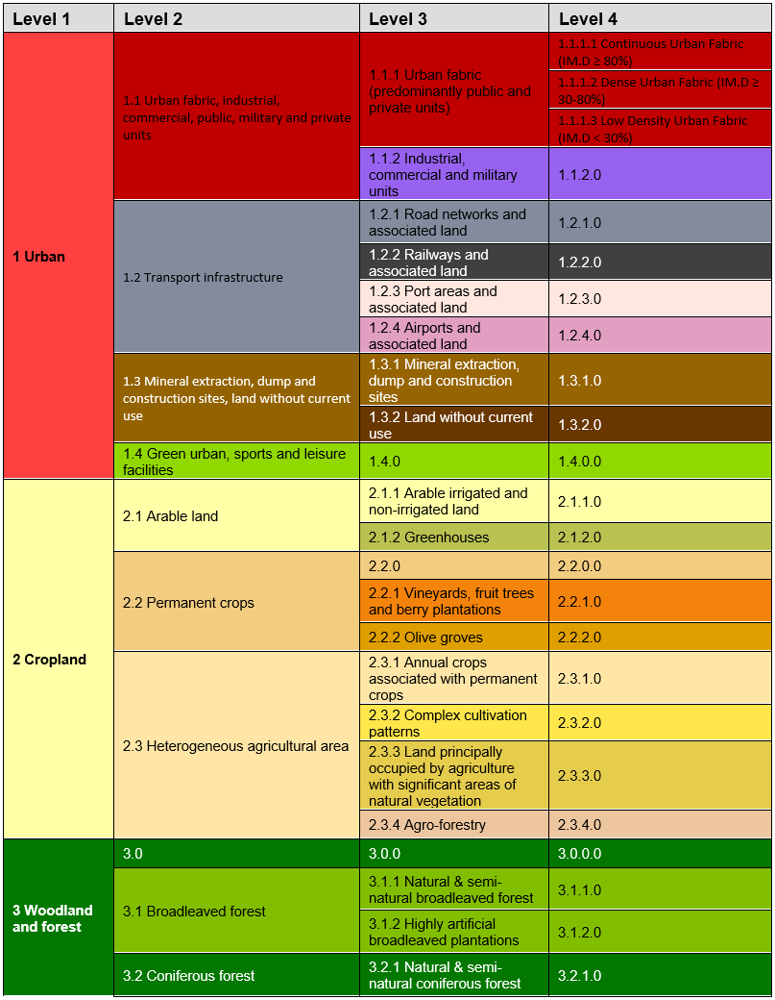 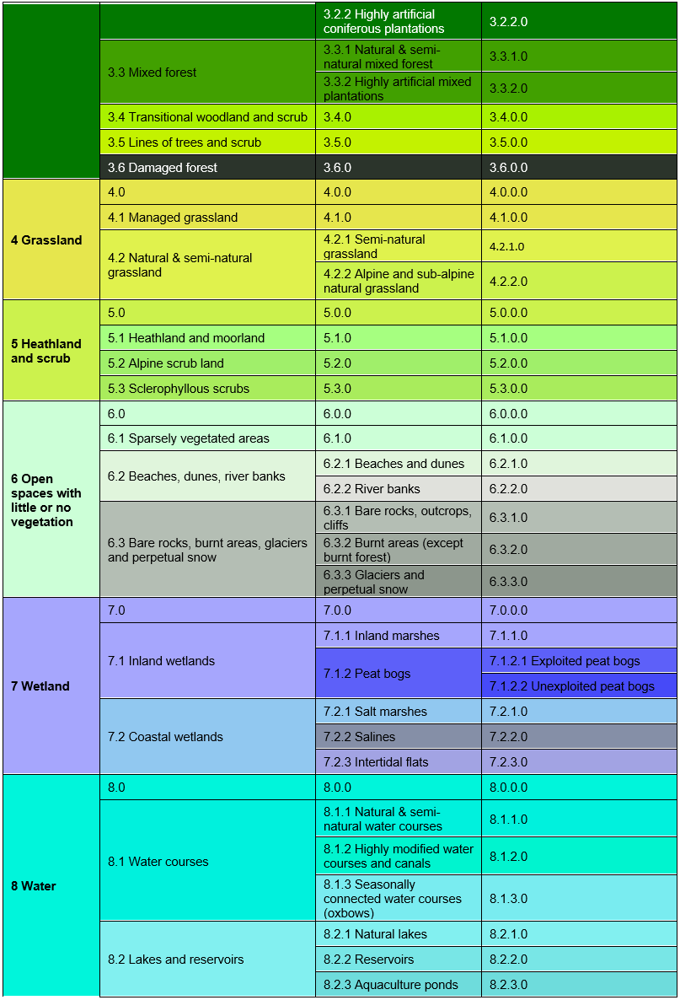 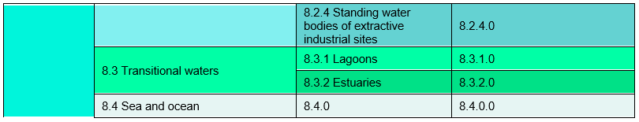
4 Mapping Rules
Object Delineation:
Object delineation is performed on VHR EO data as primary data source. In areas, where two or more satellite scenes overlap, the most recent scene is chosen as primary data source. In this regard a detailed prioritization system has been established considering especially acquisition year and acquisition month. In cases where clouds or cloud shadows cover the area of interest alternative image data can be used.
Delineation Rules:
Object delineation should be as follows:
Delineation shall be angular and not round.
Avoid digitizing too many vertices: Use vertices as few as possible and only as many as necessary to define the shape of an object.
Avoid to map sharp angles.
Use road centers (roads < 10m width) as border between two objects if roads separate two features. E.g. a forest and an agricultural area are separated by a road feature < 10m width. Map the border between forest and agriculture in the middle of the road.
Minimum Mapping Unit (MMU)/ Minimum Mapping Width (MMW):
The minimum mapping unit defined is ≥ 0.5 ha for all objects. A minimum width of ≥ 10m is required for all linear features.
MMU Exceptions:
Objects located at the border of the riparian zone: If an object is cut but the riparian border and the portion lying inside the RZ therefore is < 0.5 ha, this feature is mapped, if the whole object (inside and outside the RZ) amounts to ≥ 0.5 ha. However, the MMU of those divided features lying inside the RZ must have a MMU of at least ≥ 0.2 ha. Smaller objects will be generalized.
Linear features (roads, railways, rivers) that are split in two or more polygons by other linear elements (e.g. the road/railway network) will be mapped even if the resulting segments are smaller than the MMU in order to preserve the. However, features < 0.1 ha will be generalized.
Objects inside Urban Atlas Core Regions keep their MMU of 0.25 ha and will not be generalized.Urban objects which are confined by roads, railways, or rivers. Features < 0.25 ha will be generalized.
MMW Exceptions:
- To maintain continuity of linear features (Codes 1.2.1.0, 1.2.2.0, 6.2.1.0, 6.2.2.0, 8.1.1.0 and 8.1.2.0); the MMW may fall below the limit of 10 m, over a distance of up to 100 m.
Good Practice for Data Display – Mapping Scale:
On-screen mapping scale is 1:5.000 – 1:10.000 depending on the landscape and feature class. Large homogeneous objects like agricultural areas or woodland are mapped at scales 1:8.000 – 1:10.000. For all other features, 1:5.000 mapping scale is applied.
Overlap Rules:
Objects may not overlap. In case of real objects overlay, the following rules apply:
If objects overlap on different levels, the top level is mapped.
Example: if an artificial canal overlaps a river, the canal is mapped continuously.If objects overlap on the same level, the visually dominant object is mapped continuously. However, if roads and railways meet on the same level, railways are mapped continuously to maintain the railway network.
Priority Rules:
The priority rules applied are defined as follows:
Objects < 0.5 ha are added to the neighboring object with the next lesser number of the same sub-class.
Objects < 0.5 ha are added to the neighboring object of the same upper class.
Objects < 0.5 ha are added to the neighboring object with the longest common border line.
Exception: Objects surrounded by railways or roads.
If an object is below the MMU size and completely surrounded by a road or railway network, it shall be aggregated with that surrounding traffic line. However, an exception is made for urban objects. Please see respective definition with Class 1.x.x.x.
Application of Additional Data Sources:
For data interpretation, additional data sources like CORINE Land Cover (CLC) 2012/2018, Urban Atlas (UA) 2012/2018, topographic maps, national WMS services, COTS navigation data and auxiliary data including local expertise is used.
UA2012/2018: UA data are integrated in the RZ data set, where UA Core regions are located inside the RZ. In that case, MMU of all UA objects is kept; however class codes are recoded (as far as possible).
Outside UA Core regions, UA data are used as important data source for class delineation and class interpretation. Thus, interpreting the same areas twice is avoided and data compatibility between UA and RZ is guaranteed.
HRL Imperviousness Degree:
HR Impervious Degree Layer is used to support impervious degree derivation of urban classes. IM.D. is determined by either visual interpretation based on EO data and Impervious Degree Layer or derived by an automatic routine based on IM.D. Layer and road segments.
HRL Tree Cover Density:
HR Forest Layer is applied to support Tree Cover Density classification. The classification is performed by either visual interpretation based on EO data and HR Forest Layer or derived by an automatic routine based on HR Forest Layer and forest segments.
CLC2012/2018:
CLC2012/2018 is used as important data source for class assignment. CLC data use ensures data compatibility between CLC and RZ.
Landsat-8/5 data sets:
For critical classes, Landsat-8/5 data are used as additional data source. They are primarily used to support cropland/grassland differentiations and to detect irrigated areas, as in those cases, mono-temporal data analysis will not provide reliable results. Landsat-8/5 time series of summer images are collected for irrigated areas and images acquired in late summer/autumn/spring are used for grassland identification.
In-situ data:
Diverse national in-situ data like WMS services, specific maps or classifications as well as descriptions and maps of N2000 or RAMSAR site are used to support the object interpretation.
Standard Comments:
In order to clarify certain mapping delineations, there are some comments defined as product attributes.
| Description; Note | Comment |
External Border: Polygons < 0.5ha at AOI boundary or Urban Atlas Core Region (polygons have shared line segment(s) with RZ_AOI boundary or UA Core Region). Only polygons outside UA Core Regions are considered. |
"Area size exception (at RZ_AoI / UA Core Region boundary)" |
Internal Border: Objects between existing AOI (Str. 3-8) and the new AoI (Str. 2) < 0.5 ha and if the whole object (in the existing AOI and in the new AOI) amounts ≥ 0.5 ha. Preservation of the geometry is necessary to keep for a seamless product. Applies only for Strahler level 2 product, not for combined and seamless product. |
"Area size exception (at shared line between RZ_AoIs of Str. 3-8 and Str. 2)" |
Polygons < 0.5 ha inside RZ_AOI (for communicated exceptions only). Only polygons outside UA Core Regions are considered. |
"Area size exception (inside RZ_AoI / outside UA Core Region)" |
Urban Atlas: UA2012/2018 data inside UA2012/2018 Core Region. Exception for UA2012 data captured in updated UA2012 Core Region limits (not identical to URAU_2012_RG.shp). |
"UA2012_core_regions_update (name of update source)" |
For areas completely or partially flooded by water (flooded land). Only polygons outside UA Core Regions are considered. |
"Flooded area" |
Different water levels when comparing image data taken during flooding situations and “normal” water level. The water level of the “normal” situation should be used for delineation. |
"Different water levels" |
For rivers or parts of rivers where the watercourse channel type is “braided river”. Only polygons outside UA Core Regions are considered. |
"Braided river" |
For river banks that are crossed by side arms of a river. Only polygons outside UA Core Regions are considered. |
"Braided river" |
Gaps between Urban Atlas data and the layer defining Core Regions (URAU_2012_RG_C/UA core region). The gap is not in contact with the regular RZ mapping. |
“Adjusted data of UA core region” |
5 Description of Mapping Features
The following chapters describe the nature of all RZ LC/LU mapping classes in detail.
1 Urban
The urban classes contain land that is covered by building structures and transport network. Urban fabrics appear in blue and darkish blue-grey on satellite images.
The establishment of the boundary between continuous, dense and low density urban fabric can be difficult to delimit. The main aspects to determine these classes are either by the presence and quantity of vegetation, or by the use of the IM.D HRL.
From the UA Mapping Guide:
Surfaces with dominant human influence but without agricultural land use. These areas include all artificial structures and their associated non-sealed and vegetated surfaces.
Artificial structures are defined as buildings, roads, all constructions of infrastructure and other artificially sealed or paved areas.
Associated non-sealed and vegetated surfaces are areas functionally related to human activities, except agriculture.
Also, the areas where the natural surface is replaced by extraction and/or deposition or designed landscapes (such as urban parks or leisure parks) are mapped in this class.
The land use is dominated by permanent population.
Specific generalization/delineation rules are applied for urban classes:
Segments of roads, rivers and railways < 0.5 ha, that are necessary to represent the “network” of each feature will be mapped. Features < 0.1 ha will be generalized.
Urban objects confined by roads or railways ≥ 0.25 up to < 0.5ha. Smaller urban objects will be generalized.
If an infrastructure line is crossing a river, the bridge has to be mapped if the bridge is wider than 10 meters.
Specific generalization rules are applied to 1.1.1.3 Low density fabric (IM.D <30%) class (see description of the specific class).
This category includes:
1.1 Urban fabric, industrial, commercial, public, military and private units
Urban fabric contains land covered by artificial structures and transport networks. Industrial or commercial units are almost completely covered by artificial surface.
1.1.1 Urban fabric (predominantly public and private units)
1.1.1.1 Continuous Urban fabric (IM.D ≥80%)
1.1.1.2 Dense urban fabric (IM.D ≥30-80%)
1.1.1.3 Low density urban fabric (IM.D <30%)
1.1.2 Industrial, commercial and military units
- 1.1.2.0 Industrial, commercial and military units
- 1.1.2.0 Industrial, commercial and military units
1.2 Transport infrastructure
Motorways, roads and railways with its associated land and installations are included in this class if width >10 m. Airports and port areas with installations and associated land are included. If an infrastructure line is crossing a river, the bridge has to be mapped if the bridge is wider than 10 m.
1.2.1 Road networks and associated land
- 1.2.1.0 Road networks and associated land
- 1.2.1.0 Road networks and associated land
1.2.2 Railways and associated land
- 1.2.2.0 Railways and associated land
- 1.2.2.0 Railways and associated land
1.2.3 Port areas and associated land
- 1.2.3.0 Port areas and associated land
- 1.2.3.0 Port areas and associated land
1.2.4 Airports and associated land
- 1.2.4.0 Airports and associated land
- 1.2.4.0 Airports and associated land
1.3 Mineral extraction, dump and construction sites, land without current use
Dump sites include public, industrial or mine dump sites. Construction development, soil and bedrock excavations and earthwork are included in this class. Land without current use is land that is in transitional phase and it is included in urban areas.
1.3.1 Mineral extraction, dump and construction sites
- 1.3.1.0 Mineral extraction, dump and construction sites
- 1.3.1.0 Mineral extraction, dump and construction sites
1.3.2 Land without current use
- 1.3.2.0 Land without current use
- 1.3.2.0 Land without current use
1.4 Green urban, sports and leisure facilities
Green urban areas are areas with vegetation within the urban fabric and it includes parks. Sports and leisure facilities are included (camping grounds, sport grounds, leisure parks, golf courses, race courses, etc.). It also comprises parks not surrounded by urban areas.
1.4.0 Green urban, sports and leisure facilities
- 1.4.0.0 Green urban, sports and leisure facilities
1.1.1.1 Continuous Urban Fabric (IM.D ≥80%)
Definition
Buildings and its associated land together with artificial surfaced areas covers more than 80% of the total surface. Non-linear areas of vegetation and bare soil are exceptional.
The average degree of soil sealing is ≥ 80% for the whole compound.
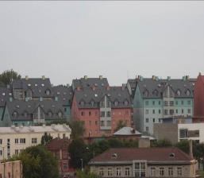
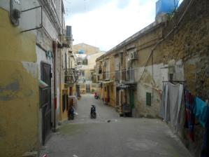
This category includes:
Built-up areas and their associated land with dominant residential use; mostly inner-city areas with central business district as long as there is partial residential use.
Buildings, roads and sealed areas cover most of the area; non-linear areas of vegetation and bare soil.
This category excludes:
- 1.1.2.0 Industrial, commercial and military units; 1.1.1.2 Dense urban fabric (IM.D ≥30-80%); and 1.1.1.3 Low Density urban fabric (IM.D<30%).
Attributes:
- N/A
Appearance:
Urban fabric appears in blue or dark blue /grey colours on satellite images.
Distinguishing between different levels of urban fabric has to be done with help of IM.D HRL.
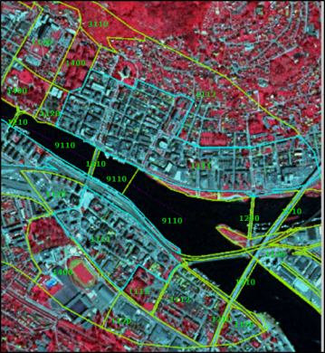
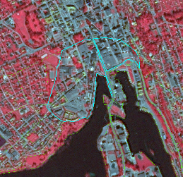
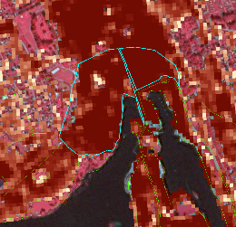
Methodological Advice:
If local in-situ data other than UA available, use if suitable.
IM.D HRL has to be used outside UA Core, for delineation support.
For interpretation of urban density: Use IM.D HRL.
1.1.1.2 Dense Urban Fabric (IM.D ≥30-80%)
Definition:
Predominant residential usage contains more than 30% non-sealed areas, independent of the housing scheme (single family houses or high-rise dwellings, city centre or suburb). The non-sealed areas might be private gardens or common green areas.
The average degree of soil sealing is > 30-80% for the whole compound.
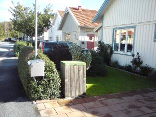
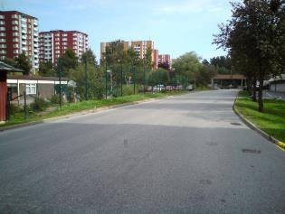
This category includes:
- Predominant residential usage. Contains more than 30% non-sealed areas, independent of their housing scheme (single family houses or high-rise dwellings, city centers or suburb).
This category excludes:
Nurseries with dominant areas of greenhouses (no or only small fields) → class 2.1.2.0 Greenhouses.
Allotment gardens → class 1.4.0.0 Green urban, sports and leisure facilities.
Holiday villages (“Club Med”) → class 1.4.0.0 Green urban, sports and leisure facilities.
Attributes:
- N/A
Appearance:
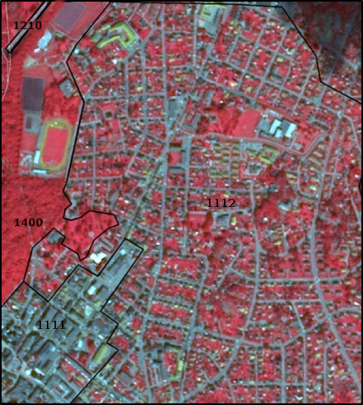
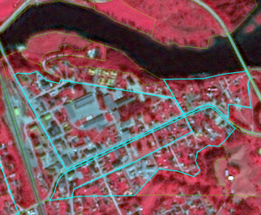
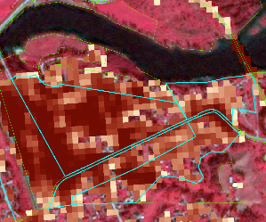
Methodological Advice:
If local in-situ data other than UA available, use if suitable.
IM.D HRL has to be used outside UA Core, for delineation support.
For interpretation of urban density: Use IM.D HRL.
1.1.1.3 Low Density Urban Fabric (IM.D <30%)
Definition:
Low density urban fabric contains residential buildings, roads and other artificially surfaced areas. The vegetated areas are predominant, but the land is not dedicated to forestry or agriculture.
The average degree of soil sealing is < 30% for the whole compound.
The build-up areas adjacent to small farms will be included in this class.
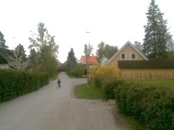
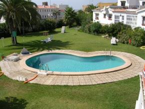
This category includes:
Residential buildings, roads and other artificially surfaced areas. The vegetated areas are predominant, but the land is not dedicated to forestry or agriculture.
Build-up areas on small farms.
This category excludes:
- Allotment gardens → 1.4.0.0 Green urban, sports and leisure facilities.
Attributes:
- N/A
Appearance:
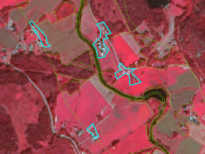
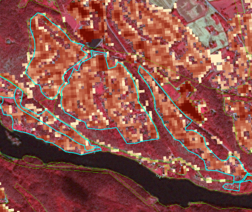
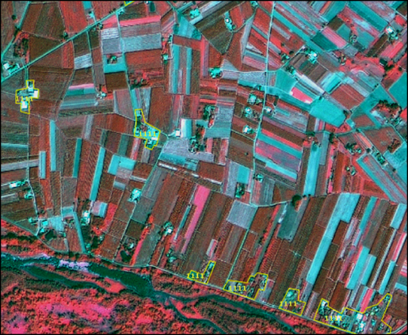
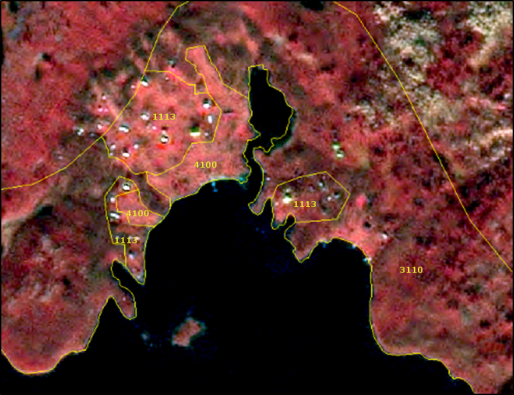
MMU Exceptions:
Exceptions from MMU >0.5 ha are made for “1.2.1.0 road network” and “1.2.2.0 railway” in order to keep the network formed by these linear features (always with 0.1 ha < MMU < 0.5 ha).
Further exception is all urban elements being confined by rails, roads or rivers. In those cases urban features up to a MMU of 0.25 ha are kept and flagged with comments (“Area size exception”).
MMW Exceptions:
- To maintain continuity of linear features (1.2.1.0 / 1.2.2.0 / 6.2.1.0 / 6.2.2.0 / 9.1.1.0 / 9.1.2.0), the MMW may fall below the limit of 10 m over a distance of up to 100 m.
Methodological Advice:
If local in-situ data other than UA available, use if suitable.
IM.D HRL has to be used outside UA Core, for delineation support.
For interpretation of urban density: Use IM.D HRL.
Generalisation Rules:
If a strict MMU >0.5 ha mapping of class 1.1.1.3 is applied, the low urban density areas would be underestimated. Therefore, to get a good representation of the area, the following generalisation rules will be adopted:
Do not apply the 10 m MMW distance rule at the urban fringe but apply a < 50m MMW to generalize outline.
Include private gardens.
Avoid mapping of single urban segments.
Map the “whole structure”.
Close gaps at the urban fringe applying a maximum width of 50 m.
In any case, real agricultural/grassland parcel contained within urban surroundings, will be mapped as agricultural/grassland.
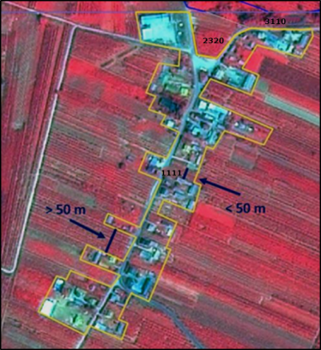
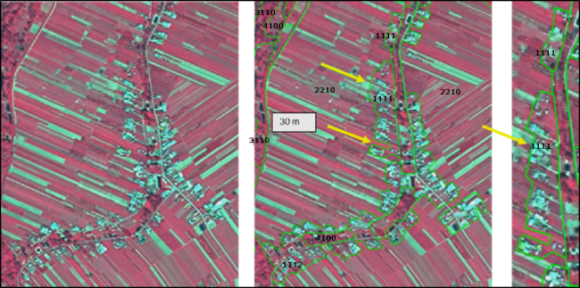
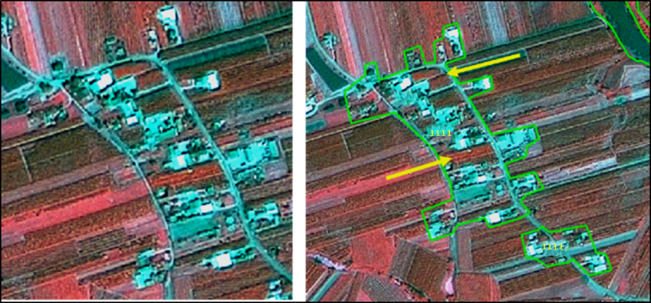
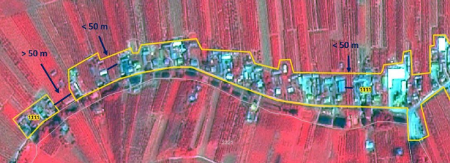
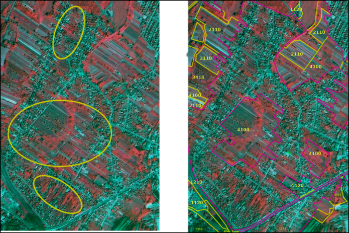
Use of Auxiliary Data:
If UA is available, keep the outline and just correct real errors. “Fine-tuning” of the class borders is not necessary.
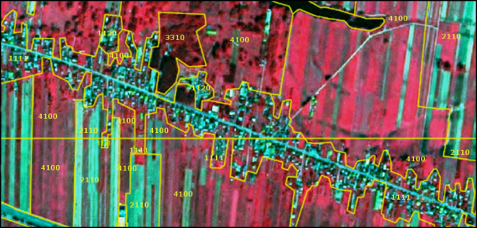
If OSM delineation is too precise, please correct real errors and perhaps parts of the outline.
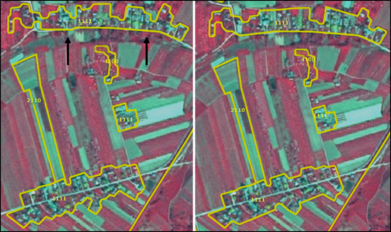
1.1.2.0 Industrial, Commercial and Military Units
Definition:
This category contains industrial, commercial and military units. The administrative border and associated areas, such as roads, sealed areas and vegetated areas are included, if these areas are below the MMU. It also contains public, military and private services.
At least 30% of the ground is covered by artificial surfaces. More than 50% of those artificial surfaces are occupied by buildings and/or artificial structures with non-residential use, i.e. industrial, commercial or carriage related uses are dominant.
The texture is homogenous with large buildings, car parks and sheds representing industrial or commercial complexes. Industrial or commercial units located in urban fabric are only taken into account if they are clearly distinguishable from residential areas.
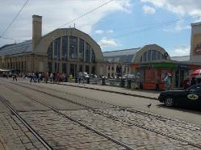
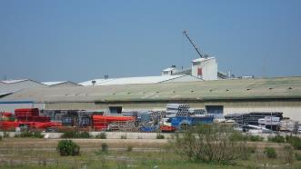
This category includes:
Industrial uses and related areas:
Sites of industrial activities, including their related areas.
Production sites.
Energy plants: nuclear, solar, hydroelectric, thermal, electric and wind farms.
Farming industries (farms with large buildings and / or greenhouses below MMU, not production fields).
Antennas, even with predominant vegetated areas. The vegetated areas may be predominant, but the land is not dedicated to forestry or agriculture.
Water treatment plants, sewage plants and seawater desalination plants.
Stud farms, agricultural facilities (cooperatives, state farm centers, livestock farms, living and exploitation buildings).
Oil camps including administrative area.
Abandoned industrial sites and by-products of industrial activities where buildings are still present.
Water retention infrastructure (dam) and hydro-electric stations.
Telecommunication networks (relay stations for TV, telescopes, radars) including associated land.
Bare soil/grassland used for storage of material next to industrial sites.
Commercial uses, retail parks and related areas:
Surfaces purely occupied by commercial activities, including their related areas (e.g. parking areas even larger than the MMU).
High-rise office buildings.
Petrol and service stations within built-up areas.
Large shopping centers.
Public, military and private services not related to the transport system:
Surfaces purely occupied by general government, public or private administrations including their related areas (access ways, lawns, parking areas).
Schools and universities research and development establishments, including associated areas like sports fields, meadows also if > 0.5 ha whenever they are inside the administrative limit.
Hospitals and other health services or buildings.
Places of worship (churches / cathedrals / religious buildings).
Active archaeological sites and museums, near to urban areas.
Administration buildings, ministries.
Penitentiaries.
Military areas excluding bases and airports.
Military exercise areas fenced and under current use.
Castles, etc. not primarily used for residential purposes (building management, - etc.).
Private storage areas without a residential component, such as compounds of garages.
Company benefit schemes (old people's home, convalescent homes, orphanages, etc.).
Exposition sites, fair sites.
Military barracks, test tracks, biological waste water treatment plants, water houses, transformers. The administrative boundary should be included and also associated land like storage space or meadows.
Mine land areas.
Cemeteries.
Jetties without boats (boats belong to the water body).
Civil protection and supply infrastructure:
Dams and dikes if they are un-vegetated.
Irrigation and drainage canals and ponds and other technical public infrastructure, to be mapped with the roads, embankments and associated land included.
Includes also breakwaters, piers and jetties (without boats-boats belong to the water body), sea walls and flood defenses.
(Ancient) city walls, other protecting walls, bunkers.
Avalanche barriers.
Security, law and order services (fire stations, penal establishments, etc.).
This category excludes:
Petrol stations along fast transit and main roads with access only from these roads. They are mapped together with the road transport system → class 1.2.1.0 Road network and associated land.
Public parks → class 1.4.0.0 Green urban, sports and leisure facilities.
Isolated holiday resorts including their hotels → class 1.4.0.0 Green urban, sports and leisure facilities.
Sport centers or bathing centers → class 1.4.0.0 Green urban, sports and leisure facilities.
Noise barriers → class 1.2.1.0 Road network and associated land or 1.2.2.0 Railways and associated land.
Lines of trees (woody barriers) for shelter or shading → class 3.4.2.0 Lines of trees and scrub.
Water courses (within e.g. diked canals) if the water area is wider than 10 m → class 9 Rivers and lakes.
Reservoirs along natural water courses → class 9 Rivers and lakes.
Dockyards and piers (if related to port or industrial) → class 1.2.3.0 Port area and associated lands.
Greenhouse surfaces → class 2.1.2.0 Greenhouses.
Dykes and dams, if they are vegetated → grassland or suitable LC/LU.
Non-active archaeological sites → map according to their actual LC/LU.
Water bodies related to the extractive industry (mines and gravel) → 9.2.4.0 Standing water bodies of extractive industrial sites.
Toxic lake, used for disposal → 9.2.4.0 Standing water bodies of extractive industrial sites (if additional information is available indicating that the lake is used for industrial purposes; if no information is available: 9.2.1.0 Natural water bodies or 9.2.2.0 Artificial standing water bodies).
Small (usually temporal) agricultural dump sites (hay storage, manure, organic material, silage), if there is no other (permanent) storage or industrial facility in neighbourhood → 1.3.1.0 Mineral extraction, dump and construction sites.
Afforestation setting, but used as transect for power line poles; power line poles visible. → Current LC/LU.
Open grassland, wood or other natural areas > 0,5 ha (MMU) within the boundaries of military sites → respective LC class.
Attributes:
- N/A
Appearance:
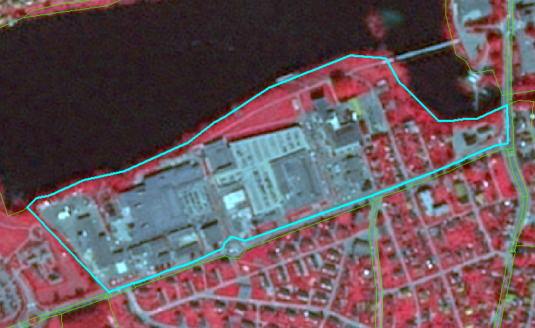
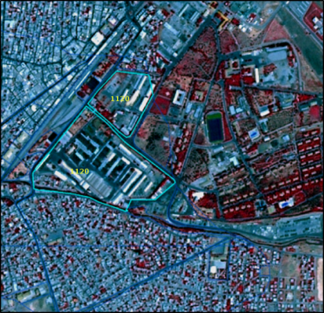
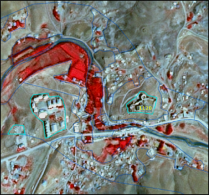
Methodological Advice:
If local in-situ data other than UA available, use if suitable.
For interpretation of urban density: Use IM.D HRL.
Interpretation of Dam and Associated Land:
Map dams as follows:
Dam and associated infrastructure: 1.1.2.0 Industrial, commercial and military units.
Channel: 9.1.2.0 Highly modified natural water courses and canals.
Water: 9.1.1.0 Interconnected water courses.
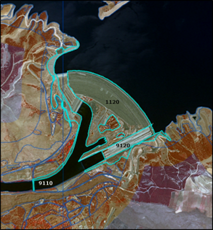
1.2.1.0 Road Networks and Associated land
Definition:
Road network and its associated land. In this sense, a road is identified as the route with a specially prepared surface that is intended for use by wheeled vehicles. MMU for roads is >=10m.
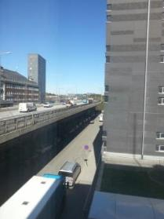
This category includes:
Roads, crossings, intersections and parking areas, including roundabouts and sealed areas with “road surface”.
Slopes of embankments or cut sections.
Areas enclosed by roads or railways, without direct access and without agricultural land use, not representing any Urban categories and whenever below MMU.
Fenced areas along roads (e.g. as for protection against wild animals).
Areas enclosed by motorways, exits or service roads with no detectable access, if they are below MMU.
Non-woody noise barriers (fences, walls, earth walls) adjacent to roads.
Rest areas, service stations and parking areas only accessible from the fast transit roads.
Foot- or bicycle paths parallel to the traffic line.
Closed-down roads.
Green strips, alleyways (with trees and bushes), if less than 10m.
This category excludes:
Motorways under construction → 1.3.1.0 Mineral extractions, dump and construction sites.
Closed-down roads (classified under the real appropriate land cover category) if MMW less than 10m.
Land plots > 0.5 ha surrounded but roads and not considered as associated land → Current land cover category.
Attributes:
- N/A
Appearance:
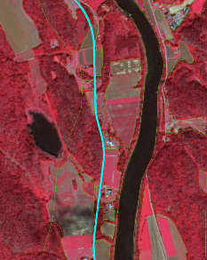
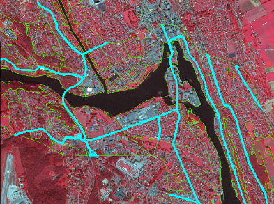
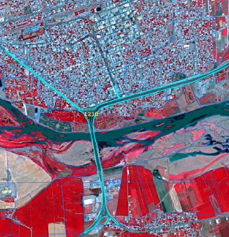
Methodological Advice:
If local in-situ data other than UA available, use if suitable.
Use COTS transport infrastructure data.
Roads will be used from COTS navigation systems, where available. In case of geometrical differences between EO data and COTS navigation data, the COTS navigation data has to be corrected in line with the EO data.
Roads do not necessarily have to form a closed network. Isolated traffic lines are possible, but they have to be mapped with regard to the MMU criterion.
Associated land < 0.5 ha MMU is mapped with the roads as it is visible in the EO data and topographic maps.
If a road is covered by a tunnel, the LU/LC over the tunnel has to be mapped.
Specific Generalisation Rule:
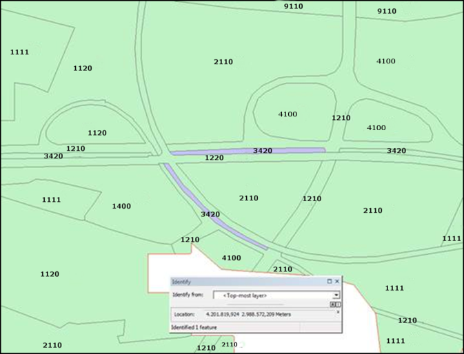
1.2.2.0 Railways and Associated Land
Definition:
Railways and its associated land. In this sense, a railway is identified as one or more railway tracks comprising a network that is operated for the conveyance of passengers and/or goods. MMU for railways is >=10m.
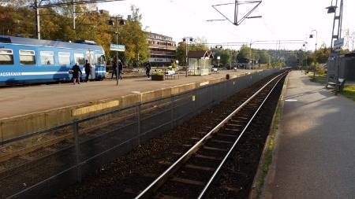
This category includes:
Railway facilities including stations, cargo stations and service areas.
Closed-down rails ≥ 10m MMW and where infrastructure is still visible.
This category excludes:
Rails ending in industrial sites→ 1.1.2.0 Industrial, commercial and military units.
Tramways → 1.2.1.0 Road network and associated land.
Mono-rails, funiculars→ 1.2.1.0 Road network and associated land or 1.3.2.0 Land without current use.
Railways and high-speed train under construction → 1.3.1.0 Mineral extractions, dump and construction sites.
Closed-down transport network (classified under the real appropriate land cover category) if MMW less than 10m.
Attributes:
- N/A
Appearance:
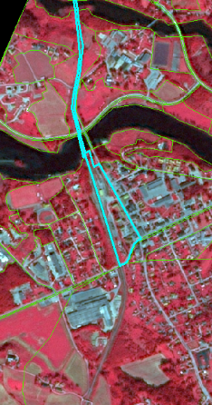
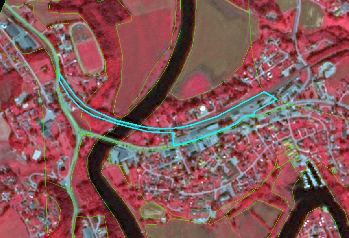
Methodological Advice:
If local in-situ data other than UA available, use if suitable.
Use COTS transport infrastructure data, if available.
Railways do not necessarily have to form a closed network. Isolated railway lines are possible, but they have to be mapped with regard to the MMU criterion.
Associated land < 0.5 ha is mapped with the railways as it is visible in the EO data and topographic maps, also in industrial sites.
Railways always form the top-level. They clip all other features. If a road bridge spans above a railway line (different topological levels), the road is mapped.
Minimum mapping width >=10m.
If a railway is covered by a tunnel, the LU/LC over the tunnel has to be mapped.
Generalisation Rules:
Secondary railway lines within urban context have to be mapped if they are visible in the images or if they can be supported by ancillary data.
In industrial sites, rail networks are often complicated and hard to delineate in SPOT5/6 if no ancillary data are available. If no auxiliary data are available, map only those railroad features that can be detected with SPOT5/6 data.
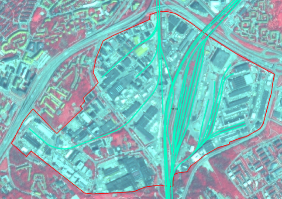
1.2.3.0 Port Areas and Associated Land
Definition:
Port areas contain the infrastructure of the port area. Quays, piers, dockyards and also the transport and storage area associated to the port.
Delineation of port areas must be taken from the geographical location, near the sea or large rivers (inland ports).
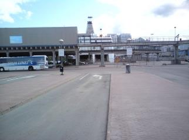
This category includes:
Administrative area of inland harbors and sea ports.
Infrastructure of port areas, including quays, dockyards, transport and storage areas and associated areas.
Commercial and military ports.
Shipyards.
Fishing ports.
Shipping and infrastructure port facilities.
Harbour stations, dock houses.
Oil terminals adjacent or connected to a port site.
Piers, if related to port.
This category excludes:
Marinas →class 1.4.0.0 Green urban, sports and leisure facilities.
Yachts ports, sport and recreation ports → class 1.4.0.0 Green urban, sports and leisure facilities.
Boats will be ignored.
Port area water, connected to open sea → class 10.0.0.0 Sea and ocean.
Port area water, connected to river or lakes → class 9 Rivers and lakes.
Port area water on marina or yachting ports (small area, not complying with MMU or MMW) →1.4.0.0 Green urban, sports and leisure facilities.
Attributes:
- N/A
Appearance:
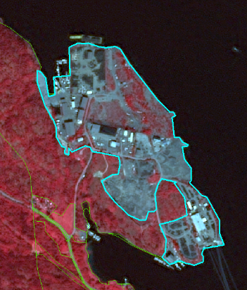
Methodological Advice:
- If local in-situ data other than UA available, use if suitable.
1.2.4.0 Airports and Associated Land
Definition:
Everything associated with the airport (runways, buildings, hangars, associated land) is included in this class, also all grassland areas, even if > 0.5 ha.
Artificial runways surrounded by grassed areas are easily distinguishable in satellite images.
Heliports (helicopters ports) are also included in this category if they are >0.5 ha.
This category includes:
Administrative area of airports, mostly fenced.
Included are all airport installations: runways, buildings and associated land (mainly grassland).
Military airports.
This category excludes:
Aerodromes without sealed runway → class 1.4.0.0 Green urban, sports and leisure facilities.
Sport airfield → class 1.4.0.0 Green urban, sports and leisure facilities.
Attributes:
- N/A
Appearance:
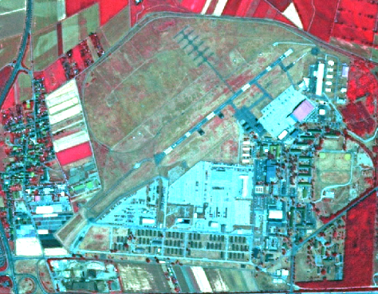
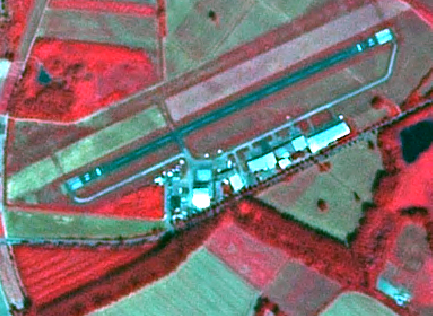
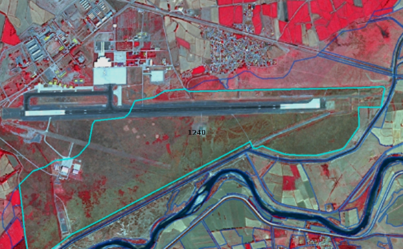
Methodological Advice:
- If local in-situ data other than UA available, use if suitable.
1.3.1.0 Mineral Extraction, Dump and Construction Sites
Definition:
This class includes public, industrial or mine dump sites, areas with open pit extraction of construction material or other minerals but also spaces under construction, soil or bedrock excavations and earth work.
Quarries and open-cast mines are easily recognizable on satellite images (white patches) because they contrast with their surroundings. The same is true for working gravel pits.
Dump sites are often located near large towns or major industrial areas. Sites being exploited/in use or only recently abandoned, with no trace of vegetation, are comprised. Associated land, buildings and infrastructures are included.
Construction sites are easily identifiable on satellite images. Included are construction sites for buildings, dams and motorways.
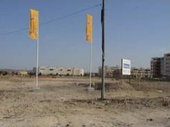
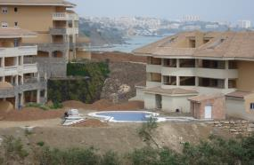
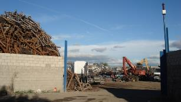
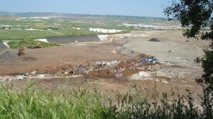
This category includes:
Open pit extraction sites (sand, quarries) including water surface (whenever <MMU) open-cast mines, oil and gas fields; including infrastructure: buildings, roads, parking lots, etc.
Their protecting dikes and / or vegetation belts and associated land such as service areas, storage depots.
Public, industrial or mine dump sites, raw or liquid wastes, legal or illegal, their protecting dikes and / or vegetation belts and associated land such as service areas.
Spaces under construction or development, soil or bedrock excavations for construction purposes or other earthworks visible in the image.
Clear evidence of actual construction needs to be identifiable in the data, such as actual excavations and machinery on site, or ongoing construction of any stage, etc. In case there are no extractive activity evidences → map according to their actual LC/LU.
Active gravel pits.
Inland salines (including water surface).
Agricultural dump sites (hay storage, manure, organic material, silage).
This category excludes:
Water bodies > MMU → class 9 Rivers and lakes.
Exploited peat bogs → class 7.2.1.0 Exploited peat bog.
Coastal salines → class 8.1.2.0 Salines.
Re-cultivated areas → map according to their actual LC/LU.
Decanting basins of biological water treatment plants → class 8.2.2.0 Reservoirs or 8.2.4.0 Standing water bodies of extractive industrial sites.
Non-active gravel pits → map according to their actual LC/LU, mainly 3.4.1.0 Transitional woodland and scrub (if bushes are visible); 6.1.0.0 Sparsely vegetated areas; and 6.2.2.0 River banks.
Attributes:
- N/A
Specific Delineation Rules for Gravel Pits:
If the gravel pit is active: map as 1.3.1.0 Mineral extraction, dump and construction sites. If it is not-active, map as 3.4.1.0 Transitional woodland and scrub (in case bushes are visible). For all areas without or with little vegetation (< 30%): Map as 6.2.2.0 River banks.
Appearance:
Methodological Advice:
- If local in-situ data other than UA available, use if suitable.
1.3.2.0 Land without Current Use
Definition:
Areas in the close to artificial surfaces, still waiting to be used or re-used, is obviously in a transitional position, “waiting to be used” and will be mapped as Land without current use.
“Land without current use” located outside urban areas will be classified according to their land cover – mostly grassland or transitional (bushes have to be visible).
This category includes:
Waste land, removed former industry areas, (“brown fields”) gaps in between new construction areas or leftover land in the urban context (“green fields”).
No actual agricultural or recreational use.
No construction is visible, without maintenance, but no undisturbed fully natural or semi-natural vegetation (secondary rural vegetation).
Also areas where the street network is already finished, but actual construction of buildings is still not visible.
Non-active archaeological sites, archaeological sites without infrastructure, (like e.g. museum, parking places, access roads) if inside urban continuum.
This category excludes:
“Leftover areas”, areas too small / narrow for any construction with regard to the MMU size → map to the appropriate neighbor class as associated land.
Active archaeological sites → 1.1.2.0 Industrial, commercial and military units.
Attributes:
- N/A
Appearance:
Methodological Advice:
- If local in-situ data other than UA available, use if suitable.
1.4.0.0 Green Urban, Sports and Leisure Facilities
Definition:
All sports and leisure facilities including associated land, whether public or commercially managed. Public arenas for any kind of sports including associated green areas, parking places, etc. Usually near to human settlements. Vegetation is often planted and regularly worked by humans; strongly human-influenced.
Public green areas such as gardens, zoos, parks, castle parks with predominantly recreational use and sporting facilities independent of being non-sealed, sealed or built-up, are entirely included on this category.
This category includes:
Public green areas for predominantly recreational use such as gardens, zoos, parks, castle parks.
Suburban natural areas that have become and are managed as urban parks.
Forests or green areas extending from the surroundings into urban areas are mapped as green when at least two sides are bordered by urban areas and structures, and traces of recreational use are visible.
Golf courses.
Sports fields (also outside the settlement area).
Camp grounds.
Leisure parks.
Riding grounds and associated horse stables and riding halls.
Racecourses.
Amusement parks.
Swimming resorts etc.
Isolated holiday villages.
Allotment gardens.
Glider or sports airports, aerodromes without sealed runway.
Marinas and associated jetties.
Skiing slopes.
Buildings belonging to 1.4 areas such as riding halls next to riding grounds, or tennis halls next to tennis court complexes.
This category excludes:
Private gardens within housing areas →.1.1.1.x Urban fabric.
Cemeteries → 1.1.2.0 Industrial, commercial and military units.
Buildings within parks, such as castles or museums → 1.1.2.0 Industrial, commercial and military units.
Patches of natural vegetation or agricultural areas enclosed by built-up areas without being managed as green urban areas → 2.1.1.0 Arable irrigated and non-irrigated land or 4.1.0.0 Managed grassland.
Motor racing courses within industrial zone used for test purposes → class 1.1.2.0 Industrial, commercial and military units.
Caravan parking used for commercial activities → class 1.1.2.0 Industrial, commercial and military units.
Soccer fields, etc. within e.g. military bases or within university campuses → class 1.1.2.0 Industrial, commercial and military units.
Boats → class 8.x.x.x Water
Attributes:
- N/A
Appearance:
Methodological Advice:
- If local in-situ data other than UA available, use if suitable.
Isolated Holiday Villages Delineation Criteria:
Map only distinct “holiday and leisure infrastructure” (e. g. camping grounds) as 1.4 Green urban, sports and leisure facilities.
2 Cropland
Cropland is the main food production area. It includes both, intensively managed ecosystems and multifunctional areas supporting many semi-natural and natural species along with food production (lower intensity management). It comprises regularly or recently cultivated agricultural, horticultural and domestic habitats and agro-ecosystems with significant coverage of natural vegetation (agricultural mosaics) (Maes et. al., 2013).
MAES categorizes croplands in three main groups:
Arable Land
Permanent Crops
Heterogeneous agricultural areas
Arable Land is land under a rotation system used for annually harvested plants and fallow lands. The land is permanently or not irrigated. It includes cereals, oil seed plants, vegetables, beets, fodder and flooded crops such as rice and other inundated croplands.
Permanent crops are surfaces that are not under a rotation system but last for many seasons and need not to be replanted after harvest. Included are ligneous crops of standard cultures for fruit production such as extensive fruit orchards, olive groves, chestnut groves, walnut groves, shrub orchards such as vineyards and some specific low-system orchard plantation, espaliers and climbers. In the case of irrigated permanent crops, the qualification of irrigation prevails over permanent, thus, all the irrigated permanent crops are classified as 2.1.1.0 Arable irrigated and non-irrigated land.
Heterogeneous agricultural areas comprise surfaces where several categories are mixed. This may be either annual crops associated with permanent crops on the same parcel or annual crops cultivated under forest trees. Moreover, also combinations of annual crops, meadows and/or permanent crops mixed with natural vegetation or natural areas belong to this class.
Specific decision rules have been stabilised to distinct different types of heterogeneous agricultural areas:
Annual crops associated or in mosaic with permanent crops (vineyards, olives groves and non-irrigated fruits trees) in parcels < 0.5 has. →2.3.1.0 Annual crops associated with permanent crops.
Mosaic or association of arable land and permanent crops in parcels < 0.5 has. →2.3.2.0 Complex cultivation patterns.
Mix of arable land and pastures → 2.3.2.0 Complex cultivation patterns.
Crops (annual/permanent/irrigated/non-irrigated) and mosaic of crops and pastures in mosaic or invaded by natural vegetation (agricultural area > 75% and presence of parcels) → 2.3.3.0 Land principally occupied by agriculture with significant areas of natural vegetation.
Agro-forestry landscapes in specific locations → 2.3.4.0 Agro-forestry.
This category includes:
2.1 Arable land
2.1.1 Arable irrigated and non-irrigated land
- 2.1.1.0 Arable irrigated and non-irrigated land
- 2.1.1.0 Arable irrigated and non-irrigated land
2.1.2 Greenhouses
- 2.1.2.0 Greenhouses
- 2.1.2.0 Greenhouses
2.2 Permanent crops
2.2.1 Vineyards, fruit trees and berry plantations
- 2.2.1.0 Vineyards, fruit trees and berry plantations
- 2.2.1.0 Vineyards, fruit trees and berry plantations
2.2.2 Olive groves
- 2.2.2.0 Olive groves
- 2.2.2.0 Olive groves
2.3 Heterogeneous agricultural area
2.3.1 Annual crops associated with permanent crops
- 2.3.1.0 Annual crops associated with permanent crops
- 2.3.1.0 Annual crops associated with permanent crops
2.3.2 Complex cultivation patterns
- 2.3.2.0 Complex cultivation patterns
- 2.3.2.0 Complex cultivation patterns
2.3.3 Land principally occupied by agriculture with significant areas of natural vegetation
- 2.3.3.0 Land principally occupied by agriculture with significant areas of natural vegetation
- 2.3.3.0 Land principally occupied by agriculture with significant areas of natural vegetation
2.3.4 Agro-forestry
- 2.3.4.0 Agro-forestry (Mediterranean Areas)
2.1.1.0 Arable Irrigated and Non-Irrigated Land
This class includes the following land cover/land use types: non-irrigated arable land; irrigated arable land and rice fields; and complex patterns of irrigated and non-irrigated arable land.
- Class 2.1.1.0 Type A: Non-Irrigated Arable Land
Definition
All kind of crops like cereals, legumes, fodder crops, root crops and fallow land. Includes flower and tree (nurseries) cultivation and vegetables (e.g. asparagus), whether open field or under plastic sheets. Includes market gardening and aromatic, medicinal and culinary plants.
This type includes:
All kinds of non-irrigated, arable land excluding permanent crops.
Includes „hop plantations”.
Multi-year crops as asparagus and chicory – also if planted under plastic sheets.
Semi-permanent crops as strawberries.
Temporary fallow land (land under three yearly rotation systems).
Drained arable land.
Non-permanent industrial crops as textile plants (e.g. cotton, flax), oleaginous plants (e.g. rapeseed, sunflower).
Tobacco.
Condiment plants.
Sugar cane.
Flowers under rotation system.
Industrial flower crops as lavender species.
Nurseries-garden (seedlings of fruit trees and shrubs).
Abandoned irrigated arable land even the irrigation channel network is still visible in the satellite image.
Strawberries not irrigated.
Cereals burnt after harvesting (usual practice in Anatolia, Turkey).
Arable fields using for growing hay.
This type excludes:
Permanent crops → 2.2.x.x Permanent crops.
Managed and natural grassland → 4.x.x.x Grassland.
Allotment gardens, city gardens → 1.4.0.0 Green urban, sports and leisure facilities.
Land that lies fallow for at least three years and which looks like grassland → 4.2.x.x Natural & semi natural grassland. Forest tree nurseries with non-commercial purposes located in forest areas → 3.4.1.0. Transitional woodland and scrub.
Fruit and berry plantation under greenhouses → 2.1.2.0 Greenhouses.
Osier trees for wicker production → 2.2.1.0 Vineyards, fruit trees and berry plantations.
Permanent plantations of roses → 2.2.1.0 Vineyards, fruit trees and berry plantations.
Wine-growing nurseries →2.2.1.0 Vineyards, fruit trees and berry plantations.
Attributes:
- N/A
Appearance:
Landscape structured by fields of rectangular size.
Mix of diverse crops resulting in a heterogeneous pattern of different image colours and image textures.
Located on fertile grounds and in vicinity to settlements.
Mix of red, green and blue colours. Red colours indicate vital green whereas green and light blue colours are an evidence for open soil of fields which already have been harvested.
- Plough furrows are a typical characteristic of crops.
- Yellow/white colours in summer-time.
- Square allotments, flat surface. Occasionally plowing furrows can be seen.
Methodological Advice:
Computer assisted visual interpretation of DWH CORE_03 data.
Use of additional data sources like e.g. AWiFS imagery of DWH CORE_08, Core_01 EO data, Landsat Archive, HRL Grassland layer or any other additional data source available on national/local level for effective differentiation between arable land and grassland.
EO data acquired outside the vegetation period may also support the discrimination between arable land and grassland.
Ancillary data in specific cases (LPIS - Land Parcel Identification System -Swedish Board of Agriculture-/ Topographic map –Lantmäteriet- in the case of Sweden).
Class 2.1.1.0 Type B: Irrigated Arable Land and Rice Fields
Definition:
Crops irrigated permanently or periodically. Most of the crops cannot be cultivated without an artificial water supply.
Use of permanent irrigation infrastructure (irrigation channels, drainage network, irrigation ponds). This class includes also rice fields and irrigated fruits trees and vineyards in Mediterranean region. Irrigated arable land is restricted to Mediterranean areas, except clear areas with irrigated permanent infrastructures in other regions (such as Po river valley or Danube plain in Romania). The delimitation of Mediterranean will be based on biogeographic regions cartography.
This type includes:
- Traditional irrigated arable land with permanent irrigation infrastructure. Traditional irrigation areas located in fertile alluvial soils alongside the main Mediterranean rivers. These areas also include intensively or extensively managed fruit trees.
Rice fields in Italy, Spain, Portugal or France (e.g. Camargue). Rice fields can be periodically flooded.
Irrigated land using underground water when parcels > 0.5 ha (regardless of the irrigation system). In many cases, parcels occupied with crops under sprinkling irrigation systems are mixed with parcels occupied by non-irrigated crops. The location of irrigated parcels can vary from an agricultural year to another within the same area.
- Areas predominantly irrigated using center-pivots irrigation systems. Main areas are located in Turkey (Tigris-Euphrates basins), Central Spain (La Mancha and Ebro Valley) or Portugal (Alentejo).
The location of the center-pivot systems can vary from an agricultural year to another within the same area.
- Fruit trees irrigated permanently and intensively managed. Full irrigation is needed to maintain these crops (e.g. orange trees, lemon trees, peach trees, etc.). Irrigated strawberries fields intensively managed. Intensively irrigated vineyards in Mediterranean region. In many cases associated to artificial irrigations ponds. Well represented in Southern Spain. Parcel with young tree plantations are also included (identifiable by soil removal, big parcels, presence of irrigation ponds, etc.).
This type excludes:
Drainage network intended to clean up wet soils → Classification according to their actual land cover.
Crops under greenhouses → 2.1.2.0 Greenhouses.
In specific locations across Europe, crops could be sporadically irrigated using sprinkler systems (e.g. improvement of production of potatoes or maize in dry summers in Central and Western Europe or irrigation of winter cereals in Southern Europe). Olive-trees, other fruit trees and vineyards could be also sporadically irrigated using localization irrigation systems. These categories are not included in this class → other arable land categories.
Ancient rice fields with irrigation channels should be mapped according to their actual land cover.
Attributes:
- N/A
Appearance:
Traditional irrigated arable land with permanent irrigation infrastructure
Red colours in summer-time.
Regular and small-medium parcels.
Irrigation channels visible.
Villages and farms.
Rice fields
In specific locations as deltas or near big rivers. Other locations are also possible.
Red colours in summer-time. Presence of water in spring and soil in winter.
Regular and small-medium parcels.
Clear presence of irrigation channels visible.
Presence of buildings.
Irrigated land using underground water
Regular medium and big parcels.
Red colour in infrared bands combinations in summer time.
Mixed with not irrigated parcels.
Centre-pivot irrigation landscape
Typical round shape of centre-pivot irrigation systems.
Red colour in infrared bands combinations in summer time.
Mixed with not irrigated parcels.
Intensively managed fruit trees plantations
Identification of lines of trees.
Red colour in infrared bands combinations in summer time.
Methodological Advice:
Traditional irrigated land with permanent infrastructures:
Extraction or irrigated land based on spectral signature of summer-time imagery.
Delineation of permanent irrigable land.
Non-irrigated land in the date of the image, fallow land and parcels presumably irrigated in spring-time within irrigable areas are included in 2.1.1.0 Arable irrigated and non-irrigated land.
Irrigated fruit-trees within these traditional irrigated areas are included in 2.1.1.0 Arable irrigated and non-irrigated land.
Center-pivot irrigation parcels within these traditional irrigated areas are included in 2.1.1.0 Arable irrigated and non-irrigated land.
Irrigated land using underground water:
Extraction or irrigated land based on spectral signature of summer-time imagery of use of series of images (as Landsat).
Parcels with the accurate spectral signature and > 0.5 ha will be considered as 2.1.1.0 Arable irrigated and non-irrigated land.
Only it will be considered parcels irrigated at the date of the image. If summer-time imagery are not available Landsat time series will be used.
Centre pivot irrigation systems
These type of irrigated landscapes are considered in the same way that other areas irrigated by underground water.
Extraction or irrigated land based on spectral signature of summer-time imagery.
Parcels with the accurate spectral signature and > 0.5 ha will be considered as 2.1.1.0 Arable irrigated and non-irrigated land.
Only it will be considered parcels irrigated at the date of the image. If summer-time imagery are not available Landsat time series will be used.
Generalization rules will be applied grouping parcels where centre pivots irrigation systems are included.
Intensively managed fruit trees plantations:
Basically the identification will be carried out using visual interpretation.
All intensively managed irrigated fruit trees parcels are considered as irrigated land.
Young tree-plantations (e.g. visible due to the presence of ponds and soil removal) will be also included.
Distinction Irrigated/Non-Irrigated Land in Mediterranean Region:
In order to extract irrigated areas in Mediterranean region, the use of time series images is essential: irrigated areas are characterized by red colours in infrared combinations bands in summer time, meanwhile, at the same time, non-irrigated parcels have not vegetation.
- There are discrepancies between coverages on the overlapped area. It is not possible to produce a proper LC/LU interpretation for irrigated land using only mono-temporal CORE03 images. In this case is only possible to detect irrigated parcels (in red colours) using the most suitable image (in this case the image dated 2011-07-15).
When using only one acquisition date image, irrigated areas can be often dismissed. Further assessment and revision will be required.
CORE03 and Landsat series will be used.
The reference year for the time series selection must be the most frequent year on the CORE03 product.
Both irrigated and non-irrigated area delimitation should be performed through CORE03 product, while time series Landsat images must be considered to assign the appropriate category (2.1.1.0).
Class 2.1.1.0 Type C: Complex Patterns of Irrigated and Non-Irrigated Arable Land
Definition:
Small irrigated parcels mixed with non-irrigated arable land parcels. Includes irrigated fruits trees.
This type includes:
Mosaic of small irrigated and non-irrigated parcels.
Mosaic of small irrigated and non-irrigated parcels due abandonment process of irrigated parcels in traditional irrigated arable land.
This class includes irrigated fruits trees.
This type excludes:
Mosaic of small parcels of diverse annual crops, pastures and/or permanent crops.→ 2.3.2.0 Complex cultivation patterns.
Complex patterns of irrigated and non-irrigated arable with significant presence of natural vegetation → 2.3.3.0 Land principally occupied by agriculture with significant areas of natural vegetation.
Attributes:
- N/A
Appearance:
Mosaic of irrigated parcels (red colours in infrared bands combinations) and non-irrigated parcels (not presence of vegetation in summer-time).
Small parcels with presence of red colours (infrared bands combinations) in summer-time.
In many cases, presence of irrigated trees.
In the case of irrigated land in abandonment process, located in traditional irrigated valleys.
Methodological Advice:
- Visual interpretation.
2.1.2.0 Greenhouses
Definition:
All types of greenhouses regardless of whether they have solid glass or plastic roofs. The greenhouses are used to breed plants, vegetables or flowers.
This category includes:
All kinds of greenhouses used to breed trees, plants, vegetables or flowers.
Greenhouses with open roofs (not covered) at time of EO data acquisition but with clear presence of infrastructure.
This category excludes:
- Crops grown under plastic sheets (e.g. asparagus, strawberries plantations and other vegetables) → .Other types of crops.
Attributes:
- N/A
Appearance:
Mostly located in rural areas at the outer border of settlements, but near cities.
High reflection of buildings due to the plastic or glass roofs. This may lead to confusions with industrial or commercial buildings. It is therefore recommended to check the objects with high-resolution data sources or other data sources like e.g. topographic maps.
Oftentimes surrounded by small fields where vegetables or flowers are grown.
Typical characteristic: long but very small narrow, parallel buildings.
Certain types of greenhouses can open their roofs. In this case, the greenhouse may appear as a normal field.
Typical characteristic: long but very small narrow, parallel buildings.
In Mediterranean areas, located in very intensive agricultural areas and in many cases mixed with irrigated parcels.
Methodological Advice:
Computer assisted visual interpretation of DWH CORE_03 data.
Use VHR data sources like e.g. aerial orthophotos from national data bases or any other adequate VHR images to verify the interpretation.
2.2.1.0 Vineyards, Fruit Trees and Berry Plantations
Definition:
Parcels planted with fruit trees, single or mixed fruit species, fruit trees associated with permanently grassed surfaces, small fruit trees or shrubs and berry plantations. Includes chestnut and walnut groves. Furthermore, it includes plantations of traditional and intensive managed grapevine grown mainly for winemaking, but also raisins, table grapes and non-alcoholic grape juice.
This type includes:
Plantations of traditional and intensive managed grapevine including vine-growing nurseries, interspaces of vegetation and small access roads.
Complex cultivation patterns where vineyards cover more than 50% of the area.
Abandoned vineyards in case they still have the characteristic structure.
Scattered high-stem and low-stem deciduous and evergreen fruit trees (e.g. apple, pear, plum, apricot, peach, cherry, citrus trees) planted in the field. The underground is mostly grassland, but can also be arable land.
Deciduous or evergreen fruit trees and berry plantations.
Central Europe: “meadow orchards” which is a traditional landscape in the temperate, maritime climate. Mediterranean zone: non-irrigated fruit trees (almonds and others as ceratonia siliqua or cherries and chestnut trees in mountainous areas), in many cases mixed with vineyards and olive groves and cereals. Pistachio trees in Turkey.
Willow plantations for wicker production.
Abandoned orchards which still preserve characteristic alignments.
Dwarf trees, shrubs espaliers or perennial ligneous climbers.
Permanent florist plantation of roses.
Permanent industrial plants like coffee, cacao, mulberry and tea.
Plantation of vineyards associated to fruit trees within the same parcel where vines cover at least 40% of the cover.
This type excludes:
Intensively irrigated vineyards in Mediterranean region → 2.1.1.0 Arable irrigated and non-irrigated land.
Annual crops associated with vineyards (2.3.1.0 Annual crops associated with permanent crops) if the single features are < 0.5 ha.
Intensively / permanently irrigated fruit trees and berry plantations → 2.1.1.0 Arable irrigated and non-irrigated land.
Fruit trees under greenhouses → 2.1.2.0 Greenhouses.
Hop plantations →2.1.1.0 Arable irrigated and non-irrigated land.
Olive groves → 2.2.2.0 Olive groves.
Fruit tree nurseries → 2.1.1.0 Arable irrigated and non-irrigated land.
Strawberries → 2.1.1.0 Arable irrigated and non-irrigated land.
Multi-year plants as asparagus → 2.1.1.0 Arable irrigated and non-irrigated land.
Carob trees → 3.1.x.x Broadleaved forest.
Abandoned orchards where plantation structures have disappeared → 3.4.1.0 Transitional woodland and scrub.
Appearance:
Vineyards:
- Characteristic structure: small parcel sizes, terraced cultivation and high reflectance of open soil when cultivated in rows.
- Characteristic structure: small parcel sizes, terraced cultivation and high reflectance of open soil when cultivated in rows.
- Location in Central Europe and other Atlantic areas: very often located at steep river shores and at sun-oriented hillsides.
High Stem Fruit Trees:
In vicinity to urban areas or agricultural farms; mostly private use.
In most cases irregular planting scheme.
In Central Europe: Understory is normally grassland, sometimes also arable land (e.g. Luxemburg).
Sometimes planted in small stripes.
In Central Europe: understory is normally grassland, sometimes also arable land (e.g. Luxemburg).
Regular planting scheme.
Big tree crown and red color in infrared band combinations.
Understory without vegetation.
Usually in fertile soils.
Low Stem Fruit Trees:
Appearance similar to orchards and shrub, but regular planting scheme.
Coarse texture.
Appearance similar to arable crops.
In many cases (e.g. tea plantations) ancillary data is needed for identification.
Methodological Advice:
Use of CLC class 221 as orientation.
Final detailed delineation and identification using computer assisted visual interpretation.
Use information of topographic maps to support the interpretation.
Where fruit trees are associated to olive trees on the same parcel, the following rules are applied:
Fruit tree cover 50%, olive tree cover 50% → 2.2.2.0 Olive groves.
Fruit tree cover > 50%: → 2.2.1.0 Vineyards, fruit trees and berry plantations.
Fruit tree cover < 50%: → 2.2.2.0 Olive groves.
Generalization for fruit trees and berry plantations mixed with fallow land or annual agricultural crops:
- Inside this type of LC/LU, a differentiation between potential annual agricultural parcels and fallow land that is under preparation for new plantations is not feasible. Those areas of fallow or annual arable land will therefore be included in class 2.2.1.0 although they may partially be slightly > 0.5 ha in order to represent the dominating character of class 2.2.1.0.
Approach for small, vegetation less stripes of fallow land/annual crops inside areas which are mainly covered by low stem fruit trees:
Cut out big, related blocks of areas without vegetation (see yellow arrow).
Integrate smaller stripes without vegetation into 2.2.1.0.
If > 75% of area is covered by fruit trees, map whole area as 2.2.1.0.
Areas with < 75 % fruit trees will be mapped as 2.3.2.0 Complex cultivation patterns.
2.2.2.0 Olive Groves
Definition:
Areas planted with olive trees.
This category includes:
Olive trees dedicated to production of olives and oil.
There are some instances when olive and vineyard parcels are combined, in this case the parcels have to be delimitated individually if they are > 0.5 ha, but should be included in the same polygon when they are < 0.5 ha. Whether they are assigned to olive grove or to vineyards will depend on density.
This category excludes:
Olive trees are considered as non-irrigated crops, except in specific sites where they are in association or mosaic with irrigated annual crops →2.1.1.0 Arable irrigated and non-irrigated land.
Wild olive trees → 5.2.0.0 Sclerophyllous vegetation.
Abandoned olive trees → 5.2.0.0 Sclerophyllous vegetation.
Attributes:
- N/A
Appearance:
Scattered trees on grassland or arable land.
Regular and irregular planting scheme.
In most cases clearly visible in the images due to characteristic spotted structure.
Methodological Advice:
Use of CLC class 223 as information source, excluding the areas irrigated over the images.
In situ data (as Spanish SIOSE land cover map).
Spectral signature.
Final detailed delineation and identification using computer assisted visual interpretation.
In case fruit trees are associated to olive trees on the same parcel, map
2.2.2.0 Olive groves, if olive trees cover ≥ 50%.
2.2.1.0 Vineyards, fruit trees and berry plantations, if olive trees cover < 50%.
2.3.1.0 Annual Crops Associated with Permanent Crops
Definition:
Non-permanent crops (arable land or pasture) associated with permanent crops on the same parcel.
Mosaic of annual crops and permanent crops (parcels less than 0.5 ha).
This class is used in Mediterranean areas, where associations olive groves/vineyards and annual crops are not rare.
This category includes:
- Association of annual and permanent crops while the proportion of each crop is below the MMU of 0.5 ha.
This category excludes:
- Permanent crops (vineyards and olive groves) non-cultivated in mosaic or association with annual crops → 2.2.1.0 Vineyards, fruit trees and berry plantations/2.2.2.0 Olive groves.
Attributes:
- N/A
Appearance:
- The same appearance that annual crops, olive groves and vineyards.
Methodological Advice:
Computer assisted visual interpretation of Core_03_EO data and other available data sources.
Classification based on CLC guideline for class 241.
2.3.2.0 Complex Cultivation Patterns
Definition:
Mosaic of small parcels of diverse annual crops, pastures and/or permanent crops. Small irrigated parcels mixed with non-irrigated arable land (includes irrigated fruit trees).
This class includes mixed parcels (< 0.5 ha) of permanent crops (fruits trees as almonds and others, berry plantations, vineyards and olive groves.
The distinction from 2.3.3.0 Land principally occupied by agriculture with significant areas of natural vegetation is that in class 2.3.2.0, the natural vegetation (patches of trees, small forests, and scrub) or natural objects like little lakes or ponds, need to be present. This is not the case for class 2.3.2.0 Complex Cultivation Patterns. Here we only have a mixture of annual crops, grassland and/or permanent crops, but no natural vegetation.
For the distinction of complex cultivation patterns in class 2.1.1.0 Arable irrigated and non-irrigated land regarding irrigation, is that in the complex pattern in class 2.1.1.0 there are irrigated parcels (annual and permanents crops), but given the size of the parcels (<0.5 ha), it is not possible to distinguish between 2.1.1.0 Arable irrigated and non-irrigated land.
This category includes:
Diverse annual crops, pastures and/or all kinds of permanent crops (vineyard, fruit trees, berry plantation, olives groves, etc.).
Mixed parcels of permanent crops (fruits trees as almonds and others, berry plantations, vineyards and olive groves. Each category covers less than < 0.5 ha.
This category excludes:
Hobby gardens / city gardens / allotment gardens →1.4.0.0 Green urban, sports and leisure facilities.
Market gardening → 2.1.1.0 Arable irrigated and non-irrigated land.
Nursery cultivation →2.1.1.0 Arable irrigated and non-irrigated land.
Irrigated or non-irrigated arable land parcels larger than 0.5 ha →2.1.1.0 Arable irrigated and non-irrigated land.
Complex patterns of irrigated and non-irrigated arable (land) with significant presence of natural vegetation →2.3.3.0 Land principally occupied by agriculture with significant areas of natural vegetation.
Attributes:
- N/A
Appearance:
Coarse texture.
Mix of diverse colours.
Small parcels separated or mixed with rows of trees or vines.
Very fine texture and characteristic pattern caused by small parcels of diverse annual crops, pasture and/or annual crops.
Methodological Advice:
Apply CLC guidelines for class 242 and do a refinement.
Investigate image texture and structure to find objects of this class.
Computer assisted visual interpretation.
2.3.3.0 Land Principally Occupied by Agriculture with Significant Areas of Natural Vegetation
Definition:
Areas principally occupied by agriculture (mix of crops/grassland), interspersed with significant natural areas.
This category includes:
Parcels of annual cropland in mosaic/association with natural vegetation < 0.5 ha.
Parcels of permanent crops in mosaic/association with natural vegetation < 0.5 ha.
Parcels of natural/semi-natural vegetation (forest, groups of trees, shrub, and small water bodies) < 0.5 ha mixed with arable land.
Hortillonage (vegetable crops and canals) in France.
Agriculture and scattered heaps of stones.
This category excludes:
Mixture of arable land and permanent crops without parcels of natural vegetation → 2.3.2.0 Complex cultivation patterns.
Areas, where agricultural area (2.1.x.x, 2.2.x.x, 2.3.x.x) is > 75% → 2.x.x.x Croplands.
Areas, where natural/semi-natural area is > 75% → 3.x.x.x Woodland and forest.
Hedged areas.
Areas with grassland and natural vegetation → 4.1.0.0 Managed grassland or 4.2.1.0 Semi-natural grassland.
Attributes:
- N/A
Appearance:
Heterogeneous areas with predominant land parcels structure but presence of natural vegetation.
Methodological Advice:
- Computer assisted visual interpretation.
2.3.4.0 Agro-Forestry
Definition:
Agro-forestry is a land use management system in which trees or shrubs are grown around or among crops or pastures. It combines agricultural and forestry techniques to achieve a more sustainable land use system. An example of this landscape is the dehesa (located in southern and central Spain and southern Portugal where it is called montado).
This category is limited to the Mediterranean area.
In this landscape the understory is regularly cleared of scrubs to improve grasslands or trees.
In agroforestry areas with T.C.D. < 30% it is frequent the presence of arable land.
Agro-forestry areas with more than 50% of scrub understory are considered as forest.
Agro-forestry areas (grassland understory) with less than 10% T.C.D. are considered as grassland.
This category includes:
Trees (several species of quercus) with an understory of grasses (predominant) or arable land.
Areas of forest trees imbricated with fruit trees/ olive trees but neither of them dominates.
Trees (predominantly quercus species.) planted in agricultural lands.
Pastures mixed with agricultural lands, or parcels that vary their use (between agricultural or pasture) depending on the year, mixed with trees.
This category excludes:
Scandinavian forest meadows → 4.2.1.0 Semi-natural grassland/ 3. Woodland and forest.
Fruit trees including meadow orchards of Central Europe → 2.2.1.0 Vineyards, fruit trees and berry plantations.
Complex cultivation patterns → 2.3.2.0 Complex cultivation patterns.
Annual crops associated with permanent crops → 2.3.1.0 Annual crops associated with permanent crops.
Olive groves → 2.2.2.0 Olive groves.
Grasslands with trees in other locations (not in Mediterranean areas) → 4.x. Grassland.
Atlantic parkland (EUNIS Code E7.1) and sub-continental parkland (EUNIS Code E7.2) → 4.x. Grassland.
Agro-forestry areas with more than 50% of scrub understory → 3.x.x.x Woodland and forest.
Agroforestry areas (grassland understory) with less than 10% T.C.D. → 4.x.x.x Grassland.
Attributes:
- N/A
Appearance:
Land with scattered trees.
Big parcels with different management and appearance: grasses (dry in summer-time), arable land and scrubs.
Distinction from forest with low density (3. Woodland and Forest) and 4.x Grassland is based in the use of in situ data (e.g. specific national databases as SIOSE in Spain).
Methodological Advice:
Use of CLC class 244 as information source.
Use of in situ-data.
Final detailed delineation and identification using computer assisted visual interpretation.
Distinction from forest (3. Woodland and Forest*) is based in the use of in situ data (e.g. specific national databases as SIOSE in Spain).
T.C.D. assignation.
3 Woodland and Forest
The woodland and forest classes are mainly dominated by woody vegetation of various ages or by succession of climax vegetation types (MAES et al. 2013). The interpretation is done according to FAO (2000) with tree cover >10%, MMU of 0.5 ha and trees able to reach 5 m height in-situ at maturity. Young natural stands and all plantations established for forestry purposes, which have yet to reach a crown density of 10% or tree height of 5 m, are also included as forest. These areas normally are part of the forest area although temporarily unstocked because of human intervention or natural reasons but which are expected to revert to forest.
Forest further comprises:
nurseries and seed orchards that constitute an integral part of the forest;
forest roads;
cleared tracts < 0.5 ha;
firebreaks and other small open areas < 0.5 ha;
forest in national parks, nature reserves and other protected areas with an area of more than 0.5 ha and width of more than 10 m (which goes beyond the FAO Forest definition of 20 m);
plantations primarily used for forestry purposes, including rubber wood plantations and cork oak stands.
Land predominantly used for agricultural practices is excluded. Excluded is also land with:
either a crown cover (or equivalent stocking level) of 5-10% of trees able to reach a height of 5m at maturity in situ;
a crown cover (or equivalent stocking level) of more than 10% of trees not able to reach a height of 5m at maturity in situ (e.g. dwarf or stunted trees);
shrub or bush cover of more than 10 percent is not accounted as Forest.
The differentiation between broadleaved, coniferous and mixed forest is in accordance with CLC interpretation guideline and HR Forest definition.
Broadleaved forest: Vegetation formation composed principally of trees, including shrub and bush understoreys, where broadleaved species predominate and represent more than 75% of the pattern.
Coniferous forest: Vegetation formation composed principally of trees, including shrub and bush understoreys, where coniferous species predominate and represent more than 75% of the pattern.
Mixed forest: Vegetation formation composed principally of trees, including shrub and bush understoreys, where neither broadleaved nor coniferous species predominate. The share of coniferous or broad-leaved species does not exceed 75% in the canopy closure.
The definition of Woodland and Forest is mainly oriented along aggregated EUNIS habitat classes.
Forest type interpretation might be problematic in locations with sunny slopes or in hilly regions with shady slopes.
Fire breaks will be classified according to their current land covers.
This category includes:
3.1 Broadleaved forest
3.1.1 Natural & semi-natural broadleaved forest
- 3.1.1.0 Natural & semi-natural broadleaved forest
- 3.1.1.0 Natural & semi-natural broadleaved forest
3.1.2 Highly artificial broadleaved plantations
- 3.1.2.0 Highly artificial broadleaved plantations
- 3.1.2.0 Highly artificial broadleaved plantations
3.2 Coniferous forest
3.2.1 Natural & semi natural coniferous forest
- 3.2.1.0 Natural & semi natural coniferous forest
- 3.2.1.0 Natural & semi natural coniferous forest
3.2.2 Highly artificial coniferous plantations
- 3.2.2.0 Highly artificial coniferous plantations
- 3.2.2.0 Highly artificial coniferous plantations
3.3 Mixed forest
3.3.1 Natural & semi natural mixed forest
- 3.3.1.0 Natural & semi natural mixed forest
- 3.3.1.0 Natural & semi natural mixed forest
3.3.2 Highly artificial mixed plantations
- 3.3.2.0 Highly artificial mixed plantations
- 3.3.2.0 Highly artificial mixed plantations
3.4 Transitional woodland and scrub
3.4.0 Transitional woodland and scrub
- 3.4.0.0 Transitional woodland and scrub
- 3.4.0.0 Transitional woodland and scrub
3.5 Lines of trees and scrub
3.5.0 Lines of trees and scrub
- 3.5.0.0 Lines of trees and scrub
- 3.5.0.0 Lines of trees and scrub
3.6 Damaged forest
3.6.0 Damaged forest
- 3.6.0.0 Damaged forest
3.1.1.0 Natural & Semi Natural Broadleaved Forest
Definition:
This type of forest comprises the tree species Fagus (EUNIS G1.6), deciduous or semi-deciduous thermophiles types like Quercus species and Carpinus orientalis, Castanea sativa or Ostrya carpinifolia (EUNIS G1.7). Moreover, Quercus robur or Quercus petraea on acid soils (G1.8), non-riverine/swamp forest composed of Betula, Populus tremula or Sorbus aucuparia (G1.9) species; Quercus robur, Ulmus spp., Fraxinus excelsior, Tilia cordata or Acer platanoides (G1.A) and woods dominated by Alnus (G1.B).
Also forest on wet ground (e.g. moors, swamps, marshes, fens or peat bogs). On non-acid peat the class is comprised of the tree species Alnus, Populus, Quercus swamp woods (EUNIS G1.4). On wet acid peat Betula pubescens or rarely Alnus glutinosa (EUNIS G1.5) are predominate.
In addition, this class comprises broadleaved sclerophyllous or lauriphyllous evergreen trees and palms, which are characteristic for the Mediterranean and warm-temperate humid zones (EUNIS class G2). In these regions broadleaved evergreen forest is predominate and represents more than 75% of the pattern.
This type includes:
Vegetation formation composed of trees, including shrub and bush understories, where broadleaved species (EUNIS classes G1.6, G1.7, G1.8, G1.9, G1.A and G1.B) predominate and represent more than 75% of the pattern.
Broadleaved swamp forest: Vegetation formation composed principally of trees, including shrub and bush understory, where broadleaved species (EUNIS classes G1.4, G1.5) predominate on acid peat/not on acid peat but wet soil and represent more than 75% of the pattern.
Broadleaved evergreen forest of the Mediterranean and warm-temperate humid zones.Includes all extensively managed, but sometimes regularly planted semi-natural broadleaved forests in Southern, Central and Northern Europe composed of regional forest types.
Includes all extensively managed, but sometimes regularly planted semi-natural broadleaved forests in Southern, Central and Northern Europe composed of regional forest types.
Linear broadleaved forest stripes at river sides.
This type excludes:
Clear-cut or regrowth of other natural & semi-natural broadleaved forest → 3.4.1.0 Transitional woodland and scrub.
Clear-cut or regrowth of broadleaved swamp forest → 3.4.1.0 Transitional woodland and scrub.
All intensively managed highly artificial broadleaved forest plantations, composed of exotic types → 3.1.2.0. Highly artificial broadleaved plantations.
Heathlands and Moorlands where vegetation cover is composed of heather, scrub and transitional woodland (e.g. birch, alder, pine) → 5.1.1.0 Heathlands and Moorland.
Scrub and reeds in rivers or at river shores → 3.4.1.0 Transitional woodland and scrub.
Broadleaved evergreen Eucalyptus plantations → 3.1.2.0 Highly artificial broadleaved plantations.
Attributes:
- N/A
Appearance:
Broadleaved Swamp Forest:
Located on wet grounds.
Near or in vicinity to exploited/unexploited peat bogs, moors, swamps or marshes. Therefore, swamp forest often shows regular, streaky shape.
Flown through or not by rivers.
Broadleaved Evergreen Forest:
Methodological Advice:
Additional information from topographic maps or other auxiliary data sets is necessary to indicate the location nearby moors, swamps, marshes, fens or peat bogs.
Use CLC information and look for forest located inside class 411 or 412.
Manual/visual or semi-automatic classification of broadleaved forest border according to CORE_03 data.
Visual interpretation or automatic pre-classification based on CORE_08, CORE_03 and CORE_01 data using HR forest layer as training data.
Spectral separation between broadleaved and coniferous forest.
3.1.2.0 Highly Artificial Broadleaved Plantations
Definition:
Cultivated deciduous broadleaved tree formations planted for the production of wood, composed of exotic species or native species out of their natural range, planted in clearly unnatural stand or as monocultures (e.g. row plantation).
This category includes:
Exotic species (e.g. Eucalyptus sp.) planted in clearly unnatural (basically row plantation).
Monoculture stands out of their natural range with clearly artificial planting pattern.
Visible clear cuts more than 0.5 ha in Eucalyptus sp. plantations. Many of these plantations have a management based on harvesting (felling, chipping and hauling) and short-term regeneration. In this case the clear cuts between harvesting and regeneration are considered as fallow land and will be included in class 3.1.2.0 Highly artificial broadleaved plantations
This category excludes:
Small, linear forest stands > 25m width, planted for wind shield purposes → 3.1.1.0 Natural and semi natural broadleaved forest.
Small, linear forest stands < 25m width, planted for wind shield purposes (sporadically transgressions are allowed if linear character is retained). → 3.4.2.0 Lines of trees and scrub.
Natural stands planted in monocultures and structured by regular road network → 3.1.1.0 Natural and semi-natural broadleaved forest.
Semi-natural broadleaved forest planted in the natural stands for timber production → 3.1.1.0 Natural and semi natural broadleaved forest.
Naturalized plantations (basically not visible rows or plantations integrated in the landscape) of exotic trees (mainly Eucalyptus sp.) → 3.1.1.0 Natural and semi natural broadleaved forest.
Attributes:
- N/A
Appearance:
Eucalyptus sp. monocultures:
Red colours in infrared bands combinations.
Plantation in stands.
Visible rows.
Presence of forest tracks and forest and firebreaks.
Presence of clear cuts.
Methodological Advice:
Manual interpretation of semi-automatic classification of broadleaved forest border
If other local in-situ data available, use if suitable.
Harvesting clear cuts in eucalyptus sp. Plantations delineation rules:
Included in eucalyptus sp. Plantations (class 3.1.2.0 Highly artificial broadleaved plantation).
Bare soil visible
Plantations rows visible.
3.2.1.0 Natural & Semi Natural Coniferous Forest
Definition:
Vegetation formation composed principally of coniferous trees, including shrub and bush understoreys and where coniferous species are predominate and represent more than 75% of the pattern.
This class comprises coniferous tree species mainly evergreen (Abies, Cedrus, Picea, Pinus, Taxus, Cupressaceae) but also deciduous Larix (EUNIS G3) or Juniperus Sabina (but with low TCD).
This class also comprises coniferous tree and scrub species (EUNIS G3.D) like e.g. Pinus sylvestris, Pinus rotundata and Picea abies, growing on a humid to wet peaty substrate, with an permanently high water level and even higher than the surrounding water table.
This type includes:
Vegetation formation composed principally of trees; including shrub and bush understory where coniferous species are predominate and represent more than 75% of the pattern.
Coniferous swamp forest: Vegetation formation composed principally of trees, including shrub and bush understory, where coniferous species are predominate on acid peat/not on acid peat but wet soil and represent more than 75% of the pattern.
Includes all extensively managed, but sometime regularly planted semi-natural coniferous forests in Southern, Central and Northern Europe composed of regional forest types.
Linear coniferous forest stripes at river sides.
This type excludes:
Heathlands and Moorlands where vegetation cover is composed of heather, scrub and transitional coniferous woodland (e.g. pine) → 5.1.1.0 Heathlands and Moorland.
Clear-cut or regrowth of coniferous forest → 3.4.1.0 Transitional woodland and scrub.
Artificial coniferous plantation of exotic species → 3.2.2.0 Highly artificial coniferous plantations.
Attributes:
- N/A
Methodological Advice:
Additional information from topographic maps or other auxiliary data sets is necessary to indicate the location nearby moors, swamps, marshes, fens or peat bogs.
Use CLC information and look for forest located inside 411 or 412.
Manual/visual interpretation of coniferous forest border according to CORE_03 data.
Appearance:
No spectral difference to fluvial/riparian or swamp coniferous forest.
Distinction by location: Not located at or near the river on mostly wet grounds.
3.2.2.0 Highly Artificial Coniferous Plantations
Definition:
Cultivated coniferous tree formations planted for the production of wood, composed of exotic species or native species out of their natural range, planted in clearly unnatural stands or as monocultures (e.g. clearly visible row plantation).
This category includes:
Highly artificial coniferous tree formations planted in monocultures and out of their natural range.
Christmas tree plantations.
This category excludes:
Small, linear forest stands < 25m MMW (sporadically transgressions are allowed if linear character is retained), probably planted as wind shield – No plantation → 3.4.2.0 Lines of trees and scrub.
Clearly detectable monoculture coniferous stands (e.g. row plantation) not composed of exotic species and planted not out of their natural range will be classified as class 3.2.1.0 Natural and semi-natural coniferous forest.
Semi-natural coniferous forest planted in the natural environments for timber production → 3.2.1.0 Natural and semi natural coniferous forest.
Attributes:
- N/A
Appearance:
Regular planting scheme.
Coniferous plantations in arable land (in many cases related to set-aside obligations). Only highly artificial coniferous plantations are included here.
Methodological Advice:
Semi-automatic or manual/visual classification based on CORE_03 data.
If situation is unclear, map 3.2.1.0 Natural and semi natural coniferous forest.
3.3.1.0 Natural and Semi Natural Mixed Forest
Definition:
Vegetation formation composed of coniferous and deciduous trees, including shrub and bush understoreys.
Neither broadleaved nor coniferous species predominate. The share of coniferous or broadleaved species does not exceed 75% in the canopy closure.
Furthermore, this class includes mixed forest on wet ground (e.g. moors, swamps, marshes, fens or peat bogs) and forest which consists of a mix of broadleaved deciduous or evergreen and coniferous trees.
This category includes:
Vegetation formation composed principally of trees, including shrub and bush understory, where neither broad-leaved nor coniferous species predominate and the share of coniferous or broad-leaved species does not exceed 75% in the canopy closure.
Mixed swamp forest: Vegetation formation composed principally of trees, including shrub and bush understory, where neither broadleaved nor coniferous species predominate on (acidic) peat/not on (acidic) peat but wet soil and the share of coniferous or broad-leaved species does not exceed 75% in the canopy closure.
Includes all extensively managed, semi-natural mixed forests in Southern, Central and Northern Europe composed of regional forest types.
This type excludes:
Clear-cut or regrowth of other natural and semi-natural mixed forest → 3.4.1.0 Transitional woodland and scrub.
Heathlands and Moorlands where the vegetation cover is composed of heather, scrub and transitional woodland (e.g. birch, alder, pine) → 5.1.1.0 Heathland and Moorland.
Attributes:
- N/A
Appearance:
Mixed Swamp Forest:
Located on wet grounds.
Near or in vicinity to exploited/unexploited peat bogs, moors, swamps or marshes. Therefore, swamp forest often shows regular, streaky shape.
Flown through or not by rivers.
Methodological Advice:
Additional information from topographic maps or other auxiliary data sets is necessary to indicate the location nearby moors, swamps, marshes, fens or peat bogs.
Use CLC information and look for forest inside classes located inside 411 or 412.
Manual/visual or semi-automatic classification of broadleaved forest border according to CORE_03 data.
3.3.2.0 Highly Artificial Mixed Plantations
Definition:
Mixed plantations (EUNIS G4.F) of coniferous and deciduous species where at least one constituent is exotic or outside its natural range, or if composed of native species planted in clearly unnatural stands.
This category includes:
- Cultivated mixed tree formations planted for the production of wood, composed of exotic species, of native species out of their natural range, or of native species planted in clearly unnatural stands, often as monocultures
This category excludes:
Small, linear forest stands (MMW > 25m) of mixed forest, planted for wind shield purposes →3.3.1.0 Natural and semi natural mixed forest.
Small, linear forest stands (MMW < 25m) of mixed forest (sporadically transgressions are allowed if linear character is retained), planted for wind shield purposes →3.4.2.0 Lines of trees and scrub.
Semi-natural mixed forest planted in the natural stands for timber production → 3.3.1.0 Natural and semi natural mixed forest
Attributes:
- N/A
Methodological Advice:
Manual interpretation of semi-automatic classification of mixed forest border.
T.C.D. attribute is either derived automatically by intersection with the High Resolution Forest Layer (Tree Cover Density product) or manually, if an automatic approach is not feasible.
3.4.0.0 Transitional Woodland and Scrub
Definition:
Bushy or herbaceous vegetation with scattered trees that represent either woodland degradation, or forest regeneration/colonization. The class is comprised of EUNIS G5.6 which defines early stages of woodland regrowth or newly-colonizing woodland composed predominantly of young individuals of high-forest species that are still less than 5 m in height as transitional woodland.
This category includes:
Pre- or post-formation of broadleaved evergreen forest with usually thick evergreen shrub stratum composed of evergreen oaks, olive trees, pines etc. Crown cover < 30%.
Abandoned agricultural land under colonization of trees and shrub. Scattered trees or shrub cover more than 30%.
Abandoned peat bogs covered by scrubs and trees in recovering process.
Abandoned fruit tree plantations and orchards.
Abandoned vineyards, where original structure is not visible any more.
Shrub along river sides and on river banks (may include small patches of reeds with area < 0.5 Ha) where neither climax tree-like forest formations nor grassland is detected (mainly located in areas of Mediterranean and continental climates with a summer season with warm-temperate & low precipitation).
Abandoned military training areas in regeneration process.
Clear-cuts in forest areas.
Forest regrowth areas, that haven’t reached the climax vegetation.
Young forest plantations of young trees that are still less than 5 m in height.
Forest nurseries inside forest areas.
Short-rotation Salix beds for biomass production.
This category excludes:
Forest stands with canopy cover of at least 50% → 3.1 Broadleaved forest, 3.2 Coniferous forest or 3.3 Mixed forest.
Abandoned olive groves → 5.2.0.0 Sclerophyllous vegetation.
Climax vegetation → 3.x.x.x Woodland and forest
Stable/climax tree-like forest formations on wet land with a tree height of less than 4 m → 5.1.1.0 Heathland and moorland or 5.1.2.0 Other scrub land.
Reed covered wetland along river sides → 7.1.1.0 Inland Marshes.
Attributes:
- N/A
Appearance:
Colour and texture of young clear-cuts is very similar to natural or managed grassland.
Forest clear-cuts often show rectangular shapes.
Multi-temporal information is helpful to clarify whether the area was forest before.
Often scattered single trees or tree patches.
Sometimes coarse texture and mix with open areas.
Methodological Advice:
Check agricultural and woodland environments for this class.
Use CLC class 324 to check for stable objects of this class.
Perform manual/visual interpretation on CORE_03 data.
Use auxiliary information e.g. geological maps to clarify specific geomorphological conditions like e.g. calcareous grounds.
3.5.0.0 Lines of Trees and Scrub
Definition:
More or less continuous lines of trees/scrub forming strips within a matrix of grassy or cultivated land or along roads, typically used for shelter or shading. The predominantly width of these tree lines is between 10m, and 25 m (sporadically transgressions are allowed if linear character is retained).
This class is comprised of EUNIS G5.1 – early stages of woodland regrowth or newly-colonizing woodland composed predominantly of young individuals of high-forest species that are still less than 5 m in height. Includes young native woodland replanted with indigenous trees and naturally-colonizing stands of non-native trees.
This category includes:
Lines of trees and shrub ≥ 10m width (and normally ≤ 25 m width), and ≥ 0.5 ha MMU inside urban or agricultural areas.
Lines of trees along rivers below Strahler Level 3 (except clear and relevant Mediterranean gallery forests— narrow stretches or strips of forests along the banks of a water body-).
This category excludes:
Lines of trees and shrub < 10 m or predominantly > 25 m MMW or < 0.5 ha MMU.
Lines of forest along rivers with Strahler Level ≥ 3-6: → 3.x.x.x, Woodland and forest
Lines of trees at the border of forest clear-cut → 3.4.1.0 Transitional woodland and scrub.
Attributes:
- N/A
Appearance:
Mostly deciduous or mixed forest.
Includes bushes.
In case of very small rivers, lines of trees and scrub will cover the creek.
Lines of trees and scrub may adjoin to forest features.
Methodological Advice:
Visual interpretation and manual delineation of respective features.
Do not include forest shadow areas.
Map lines of trees and scrub a bit smaller and map the “general” tree outline.
Use GLE data set, when available, to avoid overlays.
3.6.0.0 Damaged Forest
Definition:
Damaged forest includes areas still visible in the satellite image e.g. spectrally due to discoloration of needles and leaves or trees lying on the ground. Either pests, storm or tornado events or snow and ice damage may have caused the forest damage.
In most cases, the damage affects monocultures, as these are more vulnerable than mixed forests. Severe bark-beetle attacks, however, are most evident in National Parks, as the park regulations do not allow counteractions that may confine the damage.
Forest damaged by fire will mainly occur in southern Europe where wildfires are a common phenomenon. In Central Europe forest fires are rare and occur only sometimes during very hot and dry summers on south-facing slopes.
This category includes:
Forest damaged by fire.
Forest damaged by storm, tornado or snow events as long as trees are lying on the ground.
Forest damaged by pests like e.g. bark-beetle as long as the damage is visible due to discoloration.
This category excludes:
Other natural features damaged by fire → 6.3.2.0 Burnt areas (except burnt forest).
Areas already cleared after a storm event → 3.4.1.0 Transitional woodland and scrub.
Areas already cleared and prepared or ready for afforestation → 3.4.1.0 Transitional woodland and scrub.
Forest clear-cuts → 3.4.1.0 Transitional woodland and scrub.
Afforestation→ 3.4.1.0 Transitional woodland and scrub.
Attributes:
- N/A
Appearance:
Clearly visible in EO data due to different colour scheme: greenish to bluish colours instead of red/brown colours for forest areas.
Located inside or at the border of forests.
Located primarily in Southern Europe.
Compact area.
In case of bark-beetle clearly visible due to greenish appearance of deadwood inside vital forest stands.
Sometimes mix of deadwood and natural regrowth - mix of green and light red spectral signatures.
Methodological Advice:
In case of tornado/wind/storm or snow damage: verification of the observation of forest damage in the media (e.g. internet, newspaper) or based on additional data sources. Visual interpretation and manual delineation of the areas affected.
Usage of boundary of National Parks to identify locations that are prone to bark beetle attacks. Visual interpretation and manual delineation.
Analysis of multi-temporal time series, if appropriate.
Recent fire events show blackish shades. When several months have passed, forest damaged by fire may resemble other causes such pests.
Final detailed delineation and identification using computer assisted visual interpretation.
4 Grassland
The grassland classes are areas dominated by grassy vegetation of two kinds –managed pastures and (semi-) natural (extensively managed) grasslands3. Generally grasses (basically graminacea plants but can include tall forbs, rushes and sedges, mosses and lichens) covers more than 30% of the soils (EUNIS description), called below Crown Cover Density (C.C.D.).
According to Annex I of the EU Habitats Directive, European natural grasslands are limited to alpine meadows (as Alpine, Pyrenean and Oro-Iberian grasslands) and other located grasslands.
In this sense, MAES level 2 natural grasslands are considered as natural and semi-natural grasslands and managed grasslands are agricultural grasslands. The main characteristics of agricultural grassland are the high human influence, basically cultivation and visible parcel structure in EO data.
Semi-natural grasslands are frequently associated with trees and scrubs. These grasslands should be managed to maintain their grass coverage, basically by cutting out scrubs manually or mechanically. The combination of trees and grasslands is also present in many locations in Europe (in alluvial areas; in wooded hay meadows; due forest clearing, etc.). Dehesas and other wooded pastures, as Fennoscandinavian wooded pastures, are included in MAES Croplands class (agroforestry systems located in South Western Europe) or woodland and forest (in the case of forest pastures).
This category includes:
4.1 Managed grassland
4.1.0 Managed grassland
- 4.1.0.0 Managed grassland
- 4.1.0.0 Managed grassland
4.2 Natural & semi natural grassland
4.2.1 Semi-natural grassland
- 4.2.1.0 Semi-natural grassland
- 4.2.1.0 Semi-natural grassland
4.2.2 Alpine and sub-alpine natural grassland
- 4.2.2.0 Alpine and sub-alpine natural grassland
4.1.0.0 Managed Grassland
Definition:
Managed grasslands are considered intensively managed areas for the production of grass. From a land use point of view, in the case of these agricultural grasslands, grass is a crop in the same way as cereals or others. Managed grasslands could be divided into improved and semi-improved grasslands according to their management.
Agricultural grasslands occupy huge areas in the lowlands of the European plain and in United Kingdom and Ireland, where they have a longer growing season due to climatic conditions, leaving dryer areas for arable crops. In many areas, arable land and agricultural grasslands are mixed.
This category corresponds to 231 Corine class (Pastures). According to the statistical analysis of Corine Land Cover 2006 data, pastures (231 classes) occupied 66% of more than 60.000.000 ha considered as grasslands (classes 231-pastures- and 321 –natural grasslands-).
The main characteristics of an ideally improved agricultural grassland farmland are 4
The grass farmland is dominated by selected grasses, especially perennial, and the crop is very dense. In early spring, the grassland is often fertilized by the farmer. These grass farmland areas are chlorophyll rich almost all year long and do not contain or contain very little dead biomass.
Intensive cutting and grazing is done during the grass growing season (usually from April to September).
The grass could be cut and preserved for winter feeding. The grass for silage must be harvested in an optimum moment.
Some farmers spread the grass by mower to achieve a better wilt, with the objective to remove excessive moisture for silage. This process could generate rows in the land due to accumulation of grasses. In many cases, this makes grasses undistinguishable from arable land using remote sensing techniques.
Fertilizers are applied.
Agricultural grassland could be reseeded.
Usually there are farm buildings (silages; covered yards; stables, etc.) around.
Often/mainly used for grazing.
Improved grassland could be included in rotation. In many countries and in European regulations (as EC Regulation 796/2004 related to EU agricultural policy) an area is considered as “permanent grassland” if the land is covered by grasses during at least five years.
Per definition, there is no tree or scrub presence in improved grasslands
In between the intensively used grass farmland or in specific regions (as the bocage landscape in France), there can be plots of less intensive or extensive grassland, e.g. mowed only once a year. This type of grasslands (lowland and mountain hay meadows) could be considered as semi-improved grasslands (prairie in France; prado in Spain). Like in mountain alpine meadows, the percentage of wild floral species can increase. These grasslands can content trees and scrubs, especially trees walls around the parcels.
Managed grasslands are discriminated from arable land using Landsat and VHR images, specific color and structure patterns (arable land parcels are generally more angular in shape than pastures and the texture is smooth) and the identification of cultivation tracks, but a certain grade of confusion between two classes is expected. Arable land, in Continental; Mediterranean and Nordic environments, typically appears on flat lowland soils with clay / fine sediment and few blocks. They are therefore generally more angular in shape than pastures and the texture is smooth.
This category includes:
Improved and semi-improved grasslands.
Agricultural grassland fenced by lines of trees (including hedges and/or scrub).
Abandoned arable land used as pastures or without use (set aside) within agricultural areas.
Managed grasslands may content patches of arable land (less than 25% according CORINE rules; 30% according EUNIS general rules).
Managed grasslands with scrub and trees (basically due to processes of land abandonment in mountains but also in lowland environment) where grasses are dominant.
Improved and semi-improved grasslands without trees.
This category excludes:
Agroforestry systems (dehesas). → 2.3.4.0 Agro-forestry.
Urban grasslands (Urban lawns and sport turfs like golf, cricket, tennis, football or polo courses, plots without use in non-urban dense environments colonized by herbaceous plants and grasses of aerodromes, grassland belonging to industrial areas). → 1.4.0.0 Green urban, sports and leisure facilities.
Land plot clearly dominated by scrubs and trees and where grasses are not dominant → 3.4.1.0 Transitional woodland and scrub.
Meadows of dump sites→ 4.2.1.0 Semi-natural grassland.
Attributes:
- N/A
Appearance:
Managed (Improved) Grasslands
Located in fertile soils, preferably in Atlantic and Continental regions in flat or low slope sites.
In many cases, presence of agricultural buildings and infrastructure.
Land plot structure present.
Homogenous texture based on high permanent grasses density.
Red colors present in band combinations based on infrared during all the year. Decrease of greenness due to summer-time mowing.
Managed (Semi-improved) Grasslands
Located in lowland areas in humid regions around Europe.
Located in mountainous areas in Mediterranean region.
Sometimes presence of trees in walls used as fence between grassland plots. These trees in walls/fences are not considered as 3.4.2.0 Lines of trees and scrub.
Presence of buildings (villages and agricultural facilities).
Frequently mixed with agricultural grasslands. Lowland hay meadows are placed in less productive locations. In many cases related to forests.
Land plot structure present (in many cases bigger than surrounded agricultural grasslands).
Homogenous texture based on high permanent grasses density, but in any cases covered by scrubs and trees.
Red colors present in band combinations based on infrared during all the year.
Managed (semi-improved) grasslands fenced by lines of trees (including hedges and/or scrub) are considered as 4.1.0.0 Managed grassland.
Difference between Managed (Semi-Improved) and Semi-Natural Grasslands
| Category | Managed (semi-improved) grassland | Semi-natural grassland |
|---|---|---|
| Land use | Managed land parcel normally used for hay production | Normally used for grazing either because it cannot be mowed or because it is located on poor soils (calcareous soils, etc.). Normally never used for hay production |
| Environmental conditions | Normally located in more humid environments (except semi-natural tall-herb humid meadows) and more fertile soils (as at bottoms of river valleys). | Normally located in poor soils areas (calcareous soils, sands, etc.) In many cases (Mediterranean areas) conditioned by a period of water scarcity (usually summer-time). |
| Degree of management | Grassland that is more or less frequently mowed and/or managed in other ways. More homogeneous grass coverage. In specific conditions could be irrigated. In the case of grassland with trees they could be also managed (e.g. cut for forage). |
The herbaceous plants are natural but are created and maintained as permanent grasslands by non-intensive activities, such as grazing. Less homogenous grass coverage. |
| Landscape | Normally artificially limited by fences, tree lines, small stone walls and other type of structures in order to facilitate its management. Normally small regular parcels. |
Normally larger areas, and normally with no parcel structure. In many cases presence of trees and shrubs due process on natural vegetation invasion or land abandonment |
| Location | Near villages, fertile soils of valleys and accessible areas | Normally located on slopes or poor soils which limit the production. Located in less accessible areas. |
Treatment of Trees/Shrubs Walls in Managed Grassland
The lines of trees/shrubs used for separating parcels of managed grassland are included as managed grassland (in the same feature).
Only lines of trees with more than 10 m width will be extracted and classified as 3.4.2.0 Lines of trees and shrub.
Managed Grassland of an Alpine Valley
Rectangle shape of meadows.
Homogeneous structure.
No scrub/ bushes inside grassland, but used to border grasslands.
Infrastructure is present (streets, villages).
“mosaic” of colours due to different mowing stages.
Grassland in Special Cases:
Meadows of industrial sites >0.5 ha → 4.1.0.0 Managed grassland.
Grassland in motorway junctions → 4.1.0.0 Managed grassland.
Grassland on dykes/ dams → 4.1.0.0 Managed grassland.
→ Case by case decision, whether 4.1.0.0 Managed grassland or 4.2.1.0 Semi-natural. Decide by colour and texture.
Methodological Advice:
Use of Corine class 231 as reference.
Arable land/managed grasslands (= permanent) discrimination: use of Landsat imagery or other EO datasets acquired outside the vegetation period (August-October, March/April) and application of specific colour patterns.
- Use of VHR images to detect cultivation tracks. In many cases, mowing management of grassland produces tracks similar to those in arable land but with different pattern and row distance.
Use of specific in-situ data (as Land Parcel identification System in the case of Sweden).
Grassland is often situated in specific locations, e. g. along rivers and near lakes.
Final detailed delineation and identification using computer assisted visual interpretation.
Use of semi-automatic methods or visual interpretation to determine tree density.
Special Case: Grasslands containing Trees and Scrubs
Grassland with trees (including trees in fences < 10 meters) → 4.1.0.0 Managed grasslands.
Small patches of forest inside these areas → 3. Forests.
Lines of trees with more 10 meters → 3.4.2.0 Lines of trees and scrub.
Difference between Arable Land and Managed Grassland
| Arable Land (2.1.1) | Managed Grassland (4.1) | |
|---|---|---|
| Parcel Shape | Parcel generally more angular | Often angular, but also more irregular shapes |
| Appearance |
|
|
| Cultivation Marks |
|
|
| Landscape | Very large connected areas lying in lowlands | Appears also in more hilly areas, near forests, … |
4.2.1.0 Semi Natural Grassland
Definition:
By (semi-) natural grasslands we mean areas where the herbaceous plants are natural but are created and maintained as permanent grasslands by less intensive agricultural activities5. Here are also included marginal grasslands: abandoned crop invaded by grasses; areas near roads and other infrastructures; abandoned dumping sites, etc.
Semi natural grasslands include both dry grasslands and mesic grasslands:
- Dry Grasslands: The EUNIS definition of dry grassland is: “Well drained or dry lands dominated by grass or herbs, mostly not fertilized and with low productivity. Included are [Artemisia] steppes. Excluded are dry Mediterranean lands with shrubs of other genera where the shrub cover exceeds 10%; these are listed as garrigue (F6)6.”
The Annex I of Habitat Directive considers diverse grassland types as dry grasslands, from calcareous grasslands of central and western Europe, to steppes in Pannonic region or pseudo-steppes in Mediterranean areas. In all cases, these are grasslands located in less fertile soils, and are extensively managed (not ploughed and rarely fertilized) and used for livestock grazing. In Annex I this type of grasslands are considered as semi-natural.
In the Mediterranean Region, dry grasslands are considered by the Annex I of Habitat Directive as pseudo-steppes. They are characterized by their loss of greenness in summer-time and are devoted to livestock grazing. In Hungary and other countries we find steppes grasslands (known here as puszta), as part of the dry grasslands. Pannonian steppes are flat alluvial plains dominated by herbaceous plants extensively managed and strongly transformed by agriculture. Turkey is also dominated by the Eurasian steppe (Central Anatolia steppe; Easter Anatolia Montane Steppe and Ponto-Sarmatic steppes in the Black Sea region). Semi-natural dry grasslands are also present in salt steppes and in gypsum steppes across Europe. Mediterranean salt steppes (Limonietalia); Iberian gypsum vegetation (Gypsophiletalia) and Pannonic salt steppes and salt marshes are also considered as semi-natural grasslands. Nordic alvar grasslands are also included here. These grasslands are located in dry calcareous and limestone bedrocks, covered by snow in winter and subject to strong winds. Regularly clearing is necessary to avoid scrubs. Coastal grasslands as machairs (specific coastal old landscape present in dunes in western Ireland and Scotland) dominated by grasses are also included.
In the case of steppes (Anatolian steppe) and Mediterranean pseudo-steppes (dry Mediterranean grasslands), grasses and grass-like plants are mixed with patches of rocks and/or sparsely vegetated areas. These habitats (especially Anatolian steppes) are characterized by low biomass due to dry conditions and poor soils. In many cases these steppes suffer for over-grazing and erosion7. As results, especially during summer time, it is not feasibly the distinction using EO data between areas covered by grasses (MAES class 4. Grassland) and rocks and areas with sparsely vegetation (MAES class 6. Sparsely vegetated land). In this case has been adopted the concept of steppes and pseudo-steppes as an edaphic climax habitat dominated by grasses and grass-like plants but with a high presence of sparsely vegetated areas. In this sense, generalization rules are applied (inclusion as grassland patches of low vegetation biomass) in order to avoid an excessive mapping fragmentation.
Dry grassland in Atlantic and Continental regions are restricted to very located sites affected by poor soils conditions such as calcareous dry grasslands in Western Germany, grasslands located in chalk cliffs in Denmark, grassland located in karstic regions in the Balkans or Nordic alvars8.
- Mesic Grasslands: The EUNIS definition of mesic grasslands (E2) is: “Lowland and montane mesotrophic and eutrophic pastures and hay meadows of the boreal, nemoral, warm-temperate humid and mediterranean zones. They are generally more fertile than dry grasslands (E1), and include sports fields and agriculturally improved and reseeded pastures”. In EUNIS habitat classification9, the habitats are separated according the presence of water: waterlogged (the water table at or above ground level for at least half of the year), permafrost (habitats where the soil is at a temperature of less than 0oC throughout the year) and other (always dry; mesic, moist or humid; only seasonally wet; regularly but infrequently flooded or occasionally flooded by extreme weather conditions but which are free-draining; wet but not waterlogged; permanent snow and ice.). Here we consider mesic grasslands as mesic and moist or humid grasslands. The separation between mesic grasslands and wetlands is that the latter are waterlogged or frequently flooded.
Taken into account Annex I Habitat Directive and EUNIS classification following grasslands types are included here:
Semi-natural humid meadows: wet pastures (including riverine meadows), Mediterranean alluvial meadows and Northern boreal alluvial meadows.
Mesophile grassland not included in 4.1.0.0 Managed grasslands, including abandoned hay meadows.
Differentiation between Natural Mesic Grasslands and Wetlands (7.x):
Grasslands
Colour:
Deep red, light red
Blue-green, red-green.
Sometimes mowing structures.
No parcels, heterogeneous appearance.
Texturized.
Wetlands
Colour:
Brown, deep red, orange-green-brown
Red-blue/grey.
Sometimes mowing tracks (cutting of reeds).
No parcels.
Heterogeneous appearance.
Use auxiliary data (GIO wetlands layer) to identify permanent water plains.
This category includes:
Natural grasslands, according Corine 321 classification.
Hydrophilous tall herbs areas.
Wet grasslands alongside river in dry environments (including former gravels covered by grasses and grass-like plants).
Grassland which are open because of topographical or climatic reasons (such as grasslands periodically planed by ice).
Mesic and dry grasses of military training areas.
Grassland covering abandoned arable land.
Mediterranean dry grasslands ploughed to remove scrubs.
Marginal grasses located near infrastructures (as intersections of railroads) if > 0.5 ha.
Meadows of dump sites.
Typical afforestation setting, but used as transect for power line poles, no regeneration or replanting of trees visible, power line poles visible.
This category excludes:
Wet grasslands, which are wet in most times of the year, should be considered to be included in the wetland layer (in the case of sedge communities and tall rush swamps). → 7. Wetland.
Habitats of bogs and boreal mires (including herbaceous plants such as sphagnum and others) → 7. Wetland.
(In Nordic conditions) Grazed/moved humid pastures → 4.1.0.0 Managed grassland.
Managed grasslands → 4.1.0.0 Managed grassland.
Agroforestry systems. → 2.3.4.0 Agro-forestry.
All grasslands with more than 30% scrub cover is considered as scrub (CORINE consider 25%).→ 5. Heathland and scrub.
Clear cutting areas, new forests. → 3.4.1.0 Transitional woodland and scrub.
Reeds covering former gravels → 3.4.1.0 Transitional woodland and scrub.
Broadleaved evergreen forests, which may appear with low tree crown coverage and may be misinterpreted as semi-natural grassland (4.2.1.0) → 3.1.1.0 Natural and semi-natural broadleaved forest.
Grasslands growing in temporary wet areas.
Attributes:
- N/A
Appearance:
Calcareous/Limestone Dry Grasslands:
Located in less fertile soils (such as limestone) in Atlantic and Continental regions.
Frequently mixed with rocks and scrubs/trees.
Land plot structure present (big plots surrounded by smaller agricultural grassland plots).
Medium texture.
Predominant green/orange colours present in band combinations based on infrared during all the year. Less greenness than agricultural grasslands in the same area.
Mediterranean Dry Grasslands:
Located in the Mediterranean regions in areas affected by dry summers.
Frequently mixed with scrubs. In some areas mixed with wooded grasslands.
Generally land plot structure present (big plots).
Non-homogenous texture.
Green/Red colors in spring-time band combinations based on infrared. Brown colors in summer-time (annual grasses). In some cases white colors due over-grazing.
Pannonian Steppes:
Located in flat areas in Pannonian region (Hungary; Romania; Slovak Republic; Czech Republic; Austria; Serbia and Croatia), but centered in the Hungarian plaine (puszta).
Mixed with agricultural land areas located in areas less productive.
Usually big plots with presence of drainage channels in specific locations (Duna-Tizsa plaine).
Non-homogenous texture based on a medium grasses density and bare soil patches.
Green-brown colours in spring and autumn respectively.
Anatolian Steppes:
Located in Centre and Eastern Anatolian (montane steppes) and Black Sea region.
Frequently mixed with scrubs. No tree presence.
No land plot structure present, but surrounded by arable land plots.
Non-homogenous texture.
Green-Brown colour during all the year in dry locations. Green colours in montane steppes during less dry periods.
Coastal Meadows (Machair):
Located to sand dunes in Scotland and Ireland.
Could be mixed with scrubs and agricultural plots.
No land plot structure present.
Homogenous texture based on medium grasses coverage and the presence of sand.
Red colours present in band combinations based on infrared during all the year. Also brown due to the sand.
Nordic Alvar:
Located in Boreal region (basically Sweden and Baltic countries).
Grasses occupying areas with rocks and scrubs.
Without land plot structure.
Non-homogenous texture (grasses, rocks and scrubs).
Grasses appears in red to green colours.
Grasslands in Military Camps:
Non-homogeneous texture (grasses, sandy areas, low bushes, heath)
Xeric grassland appears in green colours.
Semi-Natural Mesophile Grassland:
Located in Atlantic and Continental biogeographic regions or in mountains in other areas.
Could be mixed with scrubs, trees and agricultural plots.
No land plot structure present.
Homogenous texture based on medium grasses coverage.
Red colors present in band combinations based on infrared during all the year. Also brown due to the sand.
The texture is often more rough than arable land and flamed with alternating dryer and more humid parts.
Alluvial Meadows:
Associated to humid soils/valleys alongside rivers and humid soils.
Frequently flooded. In big alluvial grassland mixed with agricultural plots.
Shape related to rivers valleys. In big rivers presence of abandoned meander.
No land plot structure present.
Homogenous-medium texture based on high permanent grasses density (water sometimes).
Red colors present in band combinations based on infrared during all the year. In many locations affected by a loss of greenness in summer-time (green colors).
Methodological Advice:
Use of Corine class 321 as reference.
Subtract alpine-subalpine grasslands using digital elevation model as reference.
Soil identification as a proxy: calcareous, sand, chalk, gypsum.…
Identification of potential areas of dry grasslands using bio-geographical regions information.
Final detailed delineation and identification using computer assisted visual interpretation.
4.2.2.0 Alpine and Sub-Alpine Natural Grassland
Definition:
According EUNIS definition “primary and secondary grass- or sedge- dominated formations of the alpine and subalpine levels of boreal, nemoral, mediterranean, warm-temperate humid and Anatolian mountains”10.
This category includes following natural grasslands identified in Annex I Habitat Directive:
6140 Siliceous Pyrenean Festuca eskia grasslands11 (in the Pyrenees and Cantabrian mountains in Spain);
6150 Siliceous alpine and boreal grasslands12 (acidic grasslands of mountains in the Alps, Carpathians and Scandinavia together with higher mountains elsewhere in northern Europe such as in the north of the British Isles);
6160 Oro-Iberian Festuca indigesta grasslands13 (located in the high Mediterranean mountains of the Iberian Peninsula); and
6170 Alpine and subalpine calcareous grasslands (present in the Alps, Pyrenees, Carpathian and Scandinavian mountains, highest mountains of Corsica, Apennines, Cantabrian, Betic and Iberic mountains in Spain, Dinaric Alps, the mountains of Greece and Turkey and the Scottish Highlands14)
These natural grasslands are known commonly as alpine meadows. In all the cases, these alpine meadows involve grasses growing above the limits of the mountain hay meadows and forests (in many cases in areas with mountain scrublands and barren rocks).
The majority of these alpine grasslands are grazed traditionally in summer-time under traditional transhumance regimes.
Per definition, there are no trees in alpine grasslands or their presence is rare.
Related EUNIS Habitat Classification: E4.
Alpine and subalpine grassland could be located in alpine valley bottom, slopes or mountain tops.
This category includes:
Natural grasslands (occasionally grazed) above the tree line15 with low fraction of bare rock or gravel, shrubs and sporadic trees. Grasslands cover at least 30% of the surface. Low managed grassland close to the tree line with high grasses density and no land plot structure present are also included here.
In the case of Nordic countries this class includes natural grasslands and extensive/former grazed grasslands above the tree line.
This category excludes:
Mountain hay meadows (managed grasslands) below tree line → 4.1.0.0 Managed grassland.
Alpine heaths, usually located between the tree line and the grasslands formations → 5. Heathland and scrub.
Surfaces covered by mosses and lichen → 6. Sparsely vegetated land.
Grasslands with less than 50 % field cover (in climax stage), such as snow bed grassland → 6. Sparsely vegetated land.
Attributes:
- N/A
Appearance:
Located over the tree limit in high mountains in Alpine region (valleys and slopes).
Frequently mixed with rocks; non-permanent water and peat bog.
Discrimination affected by mountain shadows.
No land plot structure present.
Homogenous-medium texture based on high permanent grasses density (rocks).
Red colors present in band combinations based on infrared during all the year (frequently covered by snow during winter-time). Grasslands in valleys present more greenness than slope grasses.
In Nordic countries this category is normally a heterogeneous vegetation type where grass dominates in a mosaic of heath vegetation, mire vegetation, alpine willow bushes and rocky ground.
Methodological Advice:
- Extraction of potential subalpine (this zone also include forests) and alpine zones (above the tree line) included in LC/LU buffer area using EU-DEM according regional altitudinal zonification:
| Mountainous Area (associated AOI) | Subalpine Altitudinal Zone (above m.) |
|---|---|
| Alps | 1,600 m.16 |
| Black Forest, Harz, Vosgues | 1,200 m.17 |
| Pyrenees | 1,600 m.18 |
| Cantabrian Mountains and Mountains of Central Spain | 1,700 m.19 |
| Carpathians mountains | 1,390 m.20 |
| Tatra Mountains | 1,550 m.21 |
| Uplands of Scotland | 900 m.22 |
| Turkey mountains | 1,500 m.23 |
| Corsica mountains | 1,600 m.24 |
Analysis of the extraction of tree line from HRL Forest.
Final delineation and identification using computer assisted visual interpretation.
In the case of Nordic countries, and considering the heterogeneous nature of this class, a polygon may include up to 30% of the classes 3.1.1.0. Natural & semi-natural broadleaved forest, 5.1.1.0. Heathland and moorland, 5.1.2.0. Other scrub land, 7.2.2.0. Unexploited peat bog, 6.1.0.0. Sparsely vegetated areas and 6.3.1.0. Bare rocks and rock debris if these surfaces are too small to map separately. The specified class should therefore cover at least 70% of the surface. The minimum mapping unit for these heterogeneous classes will be around 1 ha.
5 Heathland and Scrub
Heathland and scrub is divided into two classes depending on whether the shrubby vegetation is evergreen and adapted to water loss (Sclerophyllous vegetation) or not (Moors and heathland).
Moors and heathland appears in both temperate and frigid zones. Areas with heath and dwarf scrub vegetation adheres to the class 5.1.1.0 Heathland and moorlands. Areas dominated by brush woods and bush-like forest adheres to the class 5.1.2.0 Other scrub land.
Sclerophyllous vegetation appears in Mediterranean region.
This category includes:
5.1 Heathland and Moorland
5.1.0. Heathland and Moorland
- 5.1.0.0 Heathland and Moorland
- 5.1.0.0 Heathland and Moorland
5.2 Alpine scrubland
5.2.0. Alpine scrub land
- 5.2.0.0 Alpine scrub land
- 5.2.0.0 Alpine scrub land
5.3 Sclerophyllous scrubs
5.3.0 Sclerophyllous scrubs
- 5.3.0.0 Sclerophyllous scrubs
5.1.0.0 Heathland and Moorland
Definition:
Areas with low and closed cover, dominated by brush, bushes and herbaceous vegetation or dwarf shrubs. They are mostly secondary ecosystems with unfavourable natural conditions. The field layer has a cover > 50 % and tree cover < 10 %.
This category includes:
Areas where the field layer has a cover of more than 50 % at the phenological mature stage. (The date of the satellite data is crucial, especially in the northern countries where the vegetation period is short. An area may change from 0 % to 100 % green field cover within weeks).
Heath and scrub formation in Atlantic, sub-Atlantic and sub-Continental areas with Ulex spp., Calluna vulgaris, Vaccinium spp., Erica spp, Genista spp., Vaccinium myrtillus and Rubus spp.
Moors in supra-Mediterranean area (400 m-1100 m of elevation) with box trees and gorse, Buxus spp., Astragalus spp., Bupleurum spp., etc.
Sub Alpine tall herbs with dominating bushy facies, Calluna spp., Vaccinium spp., Rubus spp., Juniperus nana, etc.
Arctic moors areas with moss, lichen, gramineous coverage and small dwarf or prostrate shrub formations (Betula nana, Salix lapponum, Salix glauca, Juniperus alpina, Dryas spp.).
Heathland of Mediterranean mountains (apart from alpine and subalpine areas), including Juniperus sp. and Erica rich heaths.
Grey dunes with heathland vegetation.
Mosaics of complex distribution between the classes 5.1.1.0, 3.1.1.0, 4.2.2.0, 5.1.2.0, 7.2.2.0, 6.1.0.0 and 6.2.1.0 where the class 5.1.1.0 covers at least 70% of the surface.
This category excludes:
Low maquis/scrub vegetation (CLC class 323) and heathland under recolonizing process where tree-like species cover more than 30% of the surface (CLC class 324) are excluded.
Non-sclerophyllous scrub, such as dwarf pine (Pinus mugo) and green alder (Alnus viridis) in mountainous regions → 5.1.2.0 Other scrub land.
Leafy bush, bushy fens and Salix spp. Thickets→ 5.1.2.0 Other scrub land.
Juniper bush → 5.1.2.0 Other scrub land; or in Mediterranean areas → 5.2.0.0 Sclerophyllous vegetation.
Areas with > 50% field coverage with predominance of grass vegetation → 4 Grassland.
Areas with field coverage between 10-50 % field cover → 6 Sparsely vegetated land.
Areas with peat producing vegetation → 7 Wetland.
Areas with > 10 % tree coverage → 3 Woodland and forest.
Attributes:
- N/A
Appearance:
In Scandinavia this vegetation type occurs in a mosaic with mire vegetation, alpine grasslands, alpine willow bushes and rocky ground. This requires generalization where 5.1.1.0 should cover at least 70 % of the delineated area.
In alpine areas, the delineation between grass heath (4.2.2.0) and herbaceous heath (5.1.1.0) is associated with low accuracy when validated in field. A recommendation in the interpretation is to consequently also use additional supporting data.
Example from alpine and subalpine areas with Juniperus nana, Loiseleuria procumbens, Empetrum hermaphroditum, Arctostaphylos uva-ursi, Arctostaphylos alpina and elements of Alpine flora.
Examples from Scandinavian alpine area. Heathlands and Moorlands vary with areas of predominantly dwarf shrubs (brown to gray in IR) and more herbaceous (appears redder).
Areas with predominance of grass in alpine areas belong to MAES class 4.2.2.0 Alpine and subalpine natural grassland.
Example of delineation between grassland (>30% grass coverage) and Heathlands and Moorlands. The area is used as gunnery range.
Methodological Advice:
CLC class 322 (CLC 311, 333) as indication (see image below) And Landsat-5/8 images for orientation.
National supporting data (vegetation map, topographical map, land cover map, Nature 2000 habitat map).
Supporting remote sensing data.
Computer assisted visual interpretation of SPOT-5 data.
Other supporting data as HRL layers.
5.2.0.0 Alpine Scrub Land
Definition:
This class only includes dwarf pines in the Alpes and thickets and brush woods in temperate and boreal climate areas with a total crown cover of > 30%.
This category includes:
Thickets and brush woods in temperate and boreal climate areas (box, bramble thickets, broom fields, gorse thickets, braken fields, common juniper-scrubs, willow brush).
Brush woods and bush-like forest in Alpine area with dwarf mountain pine scrub or green alder scrub (Pinus mugo ssp. mughus and Alnus spp.) Alpine willow brush, etc., accompanied by Rhododendron spp.
This category excludes:
Typical heath and dwarf scrub vegetation → 5.1.1.0 Heathland and Moorland.
Areas with vegetation > 5 meter, and a tree coverage > 10 % → 3 Woodland and Forest.
Sclerophyllous bushes of arid zones, Maquis and garrigue in France and Spain, Phrygana in Greece, Matorral and tomillares in Spain. → Class 5.2.0.0 Sclerophyllous vegetation.
Shrub- or tall forb-dominated vegetation aside from northern or mountainous locations → 5.1.1.0 Heathland and Moorland/4.2.1.0 Semi-natural grassland.
Attributes:
- N/A
Appearance:
Salix scrub (5.1.2.0 Other scrub land) appears in slightly more grey relative to the Nordic subalpine/subarctic forests with Betula pubescens ssp.Czerepanovii
Example from mountainous area near Kebnekaise, Sweden.
Salix scrub, class 5.1.2.0 Other scrub land.
Dwarf scrubs, class 5.1.1.0 Heathland and moorland.
Peat producing areas, class 7.2.2.0 Unexploited peat bog.
Nordic subalpine / subarctic forests, class 3.1. Broadleaved forest.
Salix scrub (5.1.2.0 Other scrub land) appears in intense red colour in low laying parts of mountainous areas relative to dwarf scrubs (5.1.1.0 Heathland and moorland).
Example from mountainous area south of Kebnekaise, Sweden.
Salix scrub, class 5.1.2.0 Other scrub land
Dwarf scrubs, class 5.1.1.0 Heathland and moorland
Peat producing areas, class 7.2.2.0 Unexploited peat bog.
According to CLC the whole area is 322 - Moors and Heathland.
Salix scrubs in the Nordic alpine areas appear close to streams. May be included in CLC classes 311, 322 and 412 (yellow lines). A low, dense and rough texture is often seen in the orthographic photo.
Methodological Advice:
Computer-assisted visual interpretation in alpine and subalpine areas, CLC 322 (and 311).
Additional in-situ data, information from the regional authorities and vegetation maps.
The distinction from (Coniferous) Forest in mountainous areas will be done by using the HRL Forest Layer, DEMs and national in-situ data.
5.3.0.0 Sclerophyllous scrubs
Definition:
This class includes evergreen sclerophyllous bushes and scrubs, also includes maquis, garrigue and phrygana.
It corresponds to CLC class 323 and characterized by hard, leathery, evergreen foliage that is adapted to prevent moisture loss.
This category includes:
Bushes of arid zones.
Maquis and garrigue in France, Italy and Spain.
Phrygana in Greece.
Matorral, tomillares and espartales in Spain.
Either type must occupy more than 50% of the area.
Areas covered with junipers in Mediterranean areas > 0.5ha.
This category excludes:
Arborescent shrubs which are in the limits of forest formations with more or less dense arborescent cover. These arborescent shrubs have usually a thick high evergreen shrub stratum organized around several types of trees. The crown cover of these trees is more than 30%. They will be in the forest class. If the crown cover is less than 30%, it is assigned to class 3.4.1.0 Transitional woodland and scrub.
If bushes of scrub occupy less than 50% of coverage → 6.1.0.0 Sparsely vegetated areas.
Attributes:
- N/A
Appearance:
Mediterranean scrubs in Albania in summer-time.
Matorral in South-Western Spain. In Mediterranean areas, rain is concentrated in spring and autumn and red colors in scrubs are not rare as is the case.
Methodological Advice:
Sometimes is complicate to distinguish this class from the forested areas, as the colours in the SPOT image are quite similar (sometimes the only difference is density). Therefore, auxiliary information is necessary to support a correct interpretation and delineation.
Use of CLC class 3.2.3 as information source.
Use HRL Forests to detect the trees, which can be potentially, class 5.2.0.0 Sclerophyllous vegetation.
Final detailed delineation and identification using computer assisted visual interpretation.
6 Open spaces with little or no vegetation
Natural areas covered with little or no vegetation, including open thermophile formations of sandy or rocky grounds distributed on calcareous or siliceous soils frequently disturbed by erosion, sparsely vegetated areas of stones on steep slopes, screes, cliffs, rock fares, limestone pavements with plant communities colonising their tracks, beaches, sand dunes and plains, riverbanks, perpetual snow and ice, and burnt areas (other than forest areas).
Sparsely vegetated areas have less than 50 % field cover (herb, grass and/or scrub) at the phenological mature stage and less than 10 % tree cover.
This category includes:
6.1 Sparsely vegetated areas
6.1.0 Sparsely vegetated areas
- 6.1.0.0 Sparsely vegetated areas
- 6.1.0.0 Sparsely vegetated areas
6.2 Beaches, dunes, river banks
6.2.1 Beaches and dunes
- 6.2.1.0 Beaches and dunes
- 6.2.1.0 Beaches and dunes
6.2.2 River banks
- 6.2.2.0 River banks
- 6.2.2.0 River banks
6.3 Bare rocks, burnt areas, glaciers and perpetual snow
6.3.1 Bare rocks outcrops, cliffs
- 6.3.1.0 Bare rocks outcrops, cliffs
- 6.3.1.0 Bare rocks outcrops, cliffs
6.3.2 Burnt areas (except burnt forest)
- 6.3.2.0 Burnt areas (except burnt forest)
- 6.3.2.0 Burnt areas (except burnt forest)
6.3.3 Glaciers and perpetual snow
- 6.3.3.0 Glaciers and perpetual snow
6.1.0.0 Sparsely Vegetated Areas
Definition:
Sparsely vegetated areas. The field layer has a cover between 10 % and 50 % at the phenological mature stage.
This category includes:
Sparsely vegetated with a field cover between 10 % and 50 % at the phonological mature stage.
Snow bed vegetation and transitions.
Sparsely vegetated heath.
Sparsely vegetated and unstable areas of stones, boulders, or rubble on steep slopes.
Sparsely vegetation of ‘lapie’ areas, limestone paving and karstic areas.
Mosaics of complex distribution between classes 6.1.0.0 Sparsely vegetated areas, 3.1.1.0 Natural & semi-natural broadleaved forest, 4.2.2.0 Alpine and sub-alpine natural grassland, 5.1.1.0 Heathlands and moorland, 7.2.2.0 Unexploited peat bog, and 6.2.1.0 Beaches and dunes where class 6.1.0.0. Sparsely vegetated areas cover at least 70% of the surface.
This category excludes:
Non-natural sparsely vegetated areas in Urban and Croplands → 1. Urban / 2. Croplands.
Areas with >10 % tree cover → 3. Woodland and forest.
Areas with >50 % field cover → 4. Grassland/5. Heathland and scrub.
Areas with < 10 % field cover → 6.3. Bare rocks, burnt areas, glaciers and perpetual snow.
Areas with dunes or sand plains with or without a grass cove → 6.2.1.0 Beaches and dunes
Burnt areas→ 6.3.2.0 Burnt areas (except burnt forest).
Wetland→ 7. Wetland.
Bare rock, debris without vegetation → 6.3. Bare rocks, burnt areas, glaciers and perpetual snow.
Attributes:
- N/A
Appearance:
Challenges with class 6.1.0.0 Sparsely vegetated areas:
It is natural scattered and occurs in a mosaic with heath vegetation, mire vegetation, alpine grassland and willow bushes. This requires generalization where 6.1.0.0 should cover at least 70 % of the delineated area.
The date of the satellite data is thus crucial, especially in the northern countries where the vegetation period is narrow. An area may change from 0 % field cover to 100 % field cover within weeks. A recommendation in the interpretation is to consequently also use additional supporting data.
In dry environments sparsely vegetated areas may be covered by grasses in spring.
Example from Ölands alvar (a limestone barren plain).
6.1.0.0 Sparsely vegetated areas.
6.3.1.0 Bare rocks and debris.
4.2.1.0 Semi-natural grassland.
3.4.1.0 Transitional woodland and scrub.
Example from Turkey. The semi-arid condition of this areas (cold-steppe) give as a result this type of vegetation composed of very low density xeric scrubland.
Example in the Alps.
Methodological Advice:
CORINE Land Cover class 333 (Sparsely vegetated areas) as indication.
National supporting map data: vegetation map, topographical map, land cover map, Nature 2000 habitat maps. To be used for building a skeleton to facilitate the interpretation.
Supporting remote sensing data: other satellite data, national aerial orthophotos (often available as WMS-service), Google Earth.
Other supporting data: HRL layers, OpenStreetMap.
Computer assisted visual interpretation of SPOT-5 data.
6.2.1.0 Beaches and Dunes
This class includes dunes (above the drift line that means above the high point of material deposited by water) as well as beaches (up to the drift line that means up to the high point of material deposited by water) with sand, gravel, shingle, pebbles or cobblestones along lakes, rivers or sea and also artificial “beaches” in urban areas.
Trees or shrub should cover <10%. The dunes and sand plains can be partly vegetated with grass.
This category includes:
Beaches with sand, gravel, shingle, pebbles or cobblestones, along lakes, rivers or sea.
Artificial “beaches” in urban areas (if > 0.5 ha.), if not included in 1.4.0.0 Green urban, sports and leisure facilities.
Dunes and sand plains close to the drift line along rivers, lakes and sea.
Inland dunes and sand plains, i.e. not only just above the drift line.
Shifting dunes with mobile, not vegetated or open grasslands (white dune).
Grey dunes fixed, stabilised or colonised by more or less closed perennial grasslands.
Machair (natural coastal sand-plain) formations if < 50 % of field vegetation not covered by grasses.
This category excludes:
Areas with > 10 % tree cover → 3. Woodland and forest.
Areas with > 50 % field cover → 4. Grassland/5. Heathland and scrub.
River banks with sand and gravel, accumulation of material at bars and floodplain → 6.2.2.0 River banks.
Bare rocks → 6.3.1.0 Bare rock and rock debris.
Wet areas → 7. Wetlands.
Inland dune heaths (crowberry and heather brown dunes) → 5.1. Moors and Heathland.
Inland dunes thickets occupied by dense formations of shrubs including sea buckthorn privet, elder, willow, gorse or broom often festooned with creepers → 5.1.1.0 Heathland and Moorland.
Dune sclerophyllous scrubs → 5.2.0.0 Sclerophyllus vegetation.
Machair (natural coastal sand-plain) formations if > 50 % of field vegetation (grass) → 4. Grassland.
Wet areas → 7. Wetland.
Attributes:
- N/A
Appearance:
Methodological Advice:
CORINE Land Cover class 331 (Beaches, dunes and sand plains) as indication
National supporting map data: vegetation map, topographical map, land cover map, Nature 2000 habitat maps.
Supporting remote sensing data: other satellite data, national aerial orthophotos (often available as WMS-service), Google Earth.
Other supporting data: HRL layers, OpenStreetMap.
Computer assisted visual interpretation of SPOT-5 data.
A discrimination of the drift line is seldom available in supporting map data (vegetation map with the class beach can be an exception). Proposed approach is to define the limit between the often lighter beach and the darker (debris)/or vegetated areas inland through interpretation of the remote sensing data.
6.2.2.0 River Banks
Definition:
Sand and gravel of river banks including accumulation of material at bars and floodplain. Little or no vegetation (< 10 %).
This category includes:
Sand and gravel of natural river banks (at the time of the image).
Deposit material at bars and floodplain may also consist of silt and clay.
Alluvial fans with little or no vegetation or crops.
Completely or partly dry river beds with a width > 10m.
Dry river bed sections > 10m in width and max. 100m in length, which are parts of a >10m river system.
This category excludes:
Beaches along sea and lakes → 6.2.1.0 Beaches and dunes
River banks/River beds with a width < 10m along a water course with a width > 10 m → get generalized as 9.1.1 Interconnected running water courses.
Attributes:
- N/A
Appearance:
MMU Exceptions:
- Exceptions from MMU >0.5 ha are made for “6.2.2.0 River banks” in order to keep the network formed by these linear features.
MMW Exceptions:
- To maintain continuity of linear features, the MMW may fall below the limit of 10 m over a distance of up to 100 m.
Methodological Advice:
National supporting map data: vegetation map, topographical map, land cover map, Nature 2000 habitat maps.
Supporting remote sensing data: other satellite data, national aerial orthophotos (often available as WMS-service), Google Earth.
Other supporting data: HRL layers, OpenStreetMap.
Computer assisted visual interpretation of SPOT-5 data.
6.3.1.0 Bare Rocks, outcrops, cliffs
Definition:
Bedrock outcrops and blocky areas with little or no high vegetation (< 10 %) but can be moss or lichen covered.
This category includes:
Scree, cliffs, rock outcrops, rocks and reef flats.
Block litter and mountain-top-debris.
Not vegetated lapiaz.
Sites and products of recent volcanic activities, volcanic ash and lapilli fields, barren lava fields.
Not vegetated supra-littoral rocky zones.
Eroded areas with little or no high vegetation (< 10 %).
Bare areas in reservoirs.
This category excludes:
Beaches with sand, gravel, shingle, pebbles or cobblestones along lakes or sea→ 6.2.1.0 Beaches and dunes.
Areas with more than 10 % field, bush or tree cover.
Rivers banks (sand and gravel) → 6.2.2.0 River banks.
Dry river beds → 6.2.2.0 River banks.
Attributes:
- N/A
Appearance:
Methodological Advice:
CORINE Land Cover class 332 (Bare rocks) as indication.
National supporting map data: vegetation map, topographical map, land cover map, Nature 2000 habitat maps.
Supporting remote sensing data: other satellite data, national aerial orthophotos (often available as WMS-service), Google Earth.
Other supporting data: HRL layers, OpenStreetMap.
Computer assisted visual interpretation of SPOT-5 data.
6.3.2.0 Burnt Areas (except Burnt Forest)
Definition:
Areas affected by recent fires, still mainly black, not in forest.
This category includes:
- All vegetation classes except forest (class 3) which recently have been affects by fires and do not show any new vegetation cover.
This category excludes:
Human farming management by burning arable lands → 2 Cropland.
Burnt forest area→ 3.5.0.0 Damaged forest
Fires in urban areas → 1. Urban.
Attributes:
- N/A
Appearance:
Black areas in the image.
Methodological Advice:
CORINE Land Cover class 3.3.4 (Burnt areas) as indication.
National supporting map data: vegetation map, topographical map, land cover map, Nature 2000 habitat maps.
Supporting remote sensing data: other satellite data, national aerial orthophotos (often available as WMS-service), Google Earth.
Other supporting data: HRL layers, OpenStreetMap.
Computer assisted visual interpretation of SPOT-5 data.
Use supporting data to distinguish that the natural/semi-natural area burned is non-forest.
6.3.3.0 Glaciers and Perpetual Snow
Definition:
Land covered by glaciers or permanent snowfields.
This category includes:
- Glaciers and perpetual snow.
This category excludes:
- Temporary snow or ice covered areas → map according to the dominant LC/LU (e.g. bare rocks 6.3.1.0).
Attributes:
- N/A
Appearance:
Methodological Advice:
CORINE Land Cover class 335 (Glaciers and perpetual snow) as indication.
National supporting map data: vegetation map, topographical map, land cover map, Natura 2000 habitat maps.
Supporting remote sensing data: other satellite data, national aerial orthophotos (often available as WMS-service), Google Earth.
Other supporting data: HRL layers, OpenStreetMap.
Computer assisted visual interpretation of SPOT-5 data.
Use supporting map data to identify glaciers and permanent snow, especially when the date of the image is not appropriate.
The identification of glaciers and permanent snow fields depends on an appropriate date of the image with low cloud coverage since clouds can be lead to misinterpretations due to very similar appearance in the satellite images.
7 Wetland
According to Article 1.1 of the Ramsar Convention25 (1971), wetlands are: “areas of marsh, fen, peatland or water, whether natural or artificial, permanent or temporary, with water that is static or flowing, fresh, brackish or salt, including areas of marine water the depth of which at low tide does not exceed six meters”. This MAES class refers only to inland freshwater/saline wetlands.
Inland wetlands are predominantly water-logged specific plant and animal communities supporting water regulation and peat-related processes. This class includes natural or modified mires, bogs and fens, as well as peat extraction sites26 (MAES). Surfaces of temporary water are included in wetlands. According EUNIS guidelines (see table below), water-logged means the presence of the water table at or above ground level for at least half of the year.
Adaptation of water interpretation in EUNIS27 and related RZ classes
A decision criteria tree is established to clarify guideline distinctions between CODE Level 4 classes as follows:
This category includes:
7.1 Inland wetlands
7.1.1 Inland marshes
- 7.1.1.0 Inland marshes
- 7.1.1.0 Inland marshes
7.1.2 Peat bogs
7.1.2.1 Exploited peat bog
7.1.2.2 Unexploited peat bog
7.2 Coastal wetlands
7.2.1 Salt marshes
- 7.2.1.0 Salt marshes
- 7.2.1.0 Salt marshes
7.2.2 Salines
- 7.2.2.0 Salines
- 7.2.2.0 Salines
7.2.3 Intertidal flats
- 7.2.3.0 Intertidal flats
7.1.1.0 Inland Marshes
Definition:
Inland wetlands without a direct connection to the open ocean with significant content of water, which is influenced by a certain seasonal fluctuation.
This category corresponds to 411 CORINE Land Cover class (Inland marshes). Both inland freshwater marshes and inland salt marshes are included in this class. They are created where saline ground water rises to the surface, or in endorheic basins.
Inland marshes appear with or without a vegetation coverage. The coverage usually consists of reeds. Reed is a common name for several tall, grass-like plants of wetlands and rivers. They are all members of the order Poales: Poaceae, Cyperaceae, Sparganiaceae, Typhacea or Restionaceae.
Reed in marshes groups basically two types of plants:
Sedges (Cyperaceae family) are monocotyledon plants with solid and triangular stems; 3-ranked leaves; with flowers, and lenticular or triangular fruits. Sedges are common in wet habitats, including marshes, and in tundra habitats.
Rushes (Juncaceae family) are monocotyledon plants with solid and mostly round stems; few leaves, only basal or reduced to sheaths; with flowers and fruits in capsules. Rushes are common in wet habitats.
If not covered by vegetation: basically mud areas and/or waterlogged grasses and grass-like plants will be mapped.
Inland salt marshes without vegetation are located predominantly in Pannonic region (Pannonic salt steppes), Turkey, in Mediterranean specific locations and in endorheic basins across Europe.
This category includes:
Marshes (freshwater or salt) with or without vegetation (reeds) coverage.
Areas where reeds are harvested.
Reed covered wetland along river sides
In Nordic conditions: includes non-grazed/mowed and non-peat producing wetlands. These areas normally have a vegetation of tall grasses and sedges.
Areas flooded at least six months a year with low or no vegetation.
Grasslands highly wet or flooded at least six months a year.
Bare soils as results of previous presence of water will be also included within this category.
It will be taken into account that the Baltic Sea has only brackish coastal waters, which qualify for inland freshwater marshes.
Limestone mires.
Floating vegetation.
Reed beds in saline marshes with coverage less than 30%.
This category excludes:
Floating aquatic vegetation (species such as Nuphar spp., Nymphaea spp., Potamageton spp. and Lemna spp.) is not considered as reeds and is included in 8.2. Lakes and reservoirs or 8.4 Sea and ocean.
Grassland highly wet or flooded less than six months a year → 4.1.0.0 / 4.2.1.x Managed or semi natural grassland.
Rice fields → 2.1.1.0 Arable land.
Reeds mixed with trees (> 5m) in rivers banks → 3.x.x.x Woodland and forest.
Open water ≥ 0.5 ha in wetland areas (class 8.2.1.0 Natural lakes).
Mesic/moist grasslands → 4.1.0.0 / 4.2.1.x Managed or semi natural grassland
Marine wetlands such as salt marshes or salines → 7.2.x.x Coastal wetlands
Mires with more than 30% of tree cover density are considered as 3.0.0.0 Woodland and forest.
Inland exploited salines and extraction of sodium minerals in salt marshes, salt lakes or other locations → 1.3.1.0 Mineral extraction, dump and construction sites.
Shrub along river sides and on river banks (may include small patches of reeds with area < 0.5 Ha) where neither climax tree-like forest formations nor grassland is detected (mainly located in areas of Mediterranean and continental climates with a summer season with warm-temperate & low precipitation) → 34.1.0 Transitional woodland and shrub.
Attributes:
- N/A
Appearance:
Example of “Inland wetland” Interpretation Rules:
Waterlogged areas covered by vegetation:
Wetlands with Reeds Examples:
Wetland and semi-natural grassland distinction example:
Map orange brown-green/red-blue/Blue-grey areas as 7 Wetland.
Map other neighbouring grassland areas as 4.2.1.0 Semi-natural grassland (located in mesic environments).
Special Case in Nordic Conditions:
In the case of Nordic countries, when typical mire/peat structures cannot be seen in the satellite image/orthographic photo, it is difficult to determine if an area is peat producing or not. Therefore the position in the terrain is used for guidance. Areas directly adjacent to bigger rivers or lakes are included in 7.1.0.0 Inland marshes when visual interpretation is insufficient. This is because of lower chances of peat production when oxygen from flowing water is supplied to the ecosystem as opposed to ecosystems adjacent to standing water.
Non-peat producing wetlands with a low-growing vegetation of grasses and sedges are generally grazed/mowed. These areas are included in 7.1.0.0 Inland marshes.
Non-grazed/mowed and non-peat producing wetlands normally have a vegetation of tall grasses and sedges and are included in 7.1.0.0 Inland marshes. Temporarily flooded areas with low grasses and sedges are included in 4.2.1.0 Semi-natural grassland (located in mesic environments).
Methodological Advice:
Main identification will be based on CORINE Land Cover class 4.1.1 and Soils Map of Europe.
The existing knowledge on locations of large inland salines (Southern Europe, Pannonian Region or Turkey) will be taken into account and their surrounding ecosystems will be analyzed in order to detect possible occurrences of salines in class 7.1.0.0 Inland marshes.
The dividing line between the wetland and water classes is difficult to define without the contribution of images of different dates during the same year (in order to take into account the seasonality). The HRL Water/Wetland Layers may help to identify the boundaries between those two classes, but it should be noted that the pixel size of HR Layers is 20m and the production is based on the analysis of imagery corresponding to different years (2006-2009-2012-2018), not to different seasons.
Other important datasets to detect these boundaries are Natura 2000 Network and Wetland Ramsar Sites databases. They are particularly relevant in the Mediterranean area and are highly recommended to use in the detection of Wetland Areas and Areas of Special Concern.
Any available ancillary or in-situ data sources will also be used.
7.1.2.1 Exploited Peat Bog
Definition:
Open exploited peat producing wetlands that are not greatly affected by lakes, sea water or water from water courses. Exploited peat bogs are characterized by linear trench and parcel structure.
This category includes:
- Extraction of peat in mires.
This category excludes:
Abandoned peat extraction site with regrowth → Class 3 Woodland and forest.
Unexploited peat bogs → 7.1.2.2 Unexploited peat bog.
Exploited peat bogs which are covered by trees, water bodies or managed grassland on an area > 0.5 ha → 3.x.x.x Woodland and forest/8.x.x.x Water/4.1 Managed grassland.
Attributes:
- N/A
Appearance:
Methodological Advice:
National supporting map data: vegetation map, topographical map, land cover map, Nature 2000 habitat map, CLC data.
Supporting remote sensing data: other satellite data, national aerial orthophotos (often available as WMS-service), Google earth.
Other supporting data: HR layers, OpenStreetMap.
Computer assisted visual interpretation of SPOT-5 data.
7.1.2.2 Unexploited Peat Bog
Definition:
Open unexploited peat-producing wetlands that are not greatly affected by lakes, sea water or water from water courses.
In Nordic conditions this class is normally a heterogeneous vegetation type where mire vegetation dominates in a mosaic of heath vegetation, alpine grassland, alpine willow bushes and a rocky ground.
Alternative names are proposed for this class as “Peat producing land” or “Peat bog and other peat producing land”.
This category includes:
The mire types hummock, lawn, carpet mires and mud-bottom mires.
Peat bogs in Alpine Sub-Alpine environment across Europe.
Mosaics of complex distribution between classes 7.1.2.2 Unexploited peat bog and 8.2.1.0 Natural lakes, where class 7.1.2.2 Unexploited peat bog cover at least 70% of the surface.
This category excludes:
Areas with >10 % tree cover → Class 3 Woodland and forest.
Peat extraction site → 7.1.2.1 Exploited peat bog.
Attributes:
- N/A
Appearance:
In low lying areas or local depressions complex mire types include areas of open peat, small ponds and streaks of mosses/heath vegetation.
Methodological Advice:
CORINE Land Cover class 4.1.2 (Peatbogs) as indication.
National supporting map data: vegetation map, topographical map, land cover map, Nature 2000 habitat map.
Supporting remote sensing data: other satellite data, national aerial orthophotos (often available as WMS-service), Google earth.
Other supporting data: HR layers, OpenStreetMap.
Computer assisted visual interpretation of SPOT-5 data.
In Sweden classification is based on the Land survey Topographic map, where “wetland” and “open land” overlap. MAES wetland class is visually interpreted and adjusted manually. Adjustments of delineation are made only where obvious errors in ancillary are discernible in visual interpretation. When typical mire/peat structures cannot be seen in the image, it is difficult to determine if an area is peat producing or not. Therefore the position in the terrain is used for guidance. Areas directly adjacent to bigger rivers or lakes are included in 7.1.0.0 Inland marshes when visual interpretation is insufficient. This is because of lower chances of peat production when oxygen from flowing water is supplied to the ecosystem as opposed to ecosystems adjacent to standing water. Grazed areas from LPIS that overlap wetland from the Topographic map are included in 7.1.0.0 Inland marshes.
7.2.1.0 Salt Marshes
Definition:
Coastal salt marshes, according to the EUNIS habitat description, are dominated by sediments and salt-tolerant stands of vegetation, occurring on the extreme upper shore of sheltered coasts and periodically covered by high tides. According to the definition of CLC class 5.2, Marine waters are oceanic and continental shelf waters, bays and narrow channels including sea lochs, fiords and straits.
The class salt marshes includes according to EUNIS following habitat types: salt marsh drift lines, upper salt marshes, mid-upper salt marshes and saline brackish reed, rush and sedge beds and littoral sediments not included in 7.2.3 Intertidal flats or 6.2.1 Beaches and dunes.
The Estuaries class (8.3.2) includes marine waters not included in class 8.4.0 Sea and ocean or other lagoons and coastal wetlands classes.
Vegetated low-lying coastal areas, above the high-tide line, susceptible to flooding by seawater. Often in the process of filling in, gradually being colonized by salt tolerant plants (saline reed beds). Salt marshes also appear without or less vegetation coverage.
On the date of the EO data of reference these areas may be covered or not by water. In this category, the entire marsh area will be considered as class 7.2.1, regardless if it is covered by water or not on the date of the image.
This category includes:
Vegetated beds in salt marshes including reed coverage (basically salt-tolerant plants but also sedges and rushes).
Salt marshes in delta areas, estuaries, intertidal flats and coastal lagoons (with or without vegetation coverage).
Floating aquatic vegetation.
Muddy areas covered by water in coastal salt marshes.
This category excludes:
Inland salt marshes → 7.1.0.0 Inland marshes.
Coastal lagoons → 8.3.1.0 Lagoons.
Salines → 7.2.2.0 Salines.
Intertidal flats → 7.2.3.0 Intertidal flats.
Estuaries → 8.3.2.0 Estuaries.
Attributes:
- N/A
Appearance:
Flat areas covered by water, mud or moist soil in/near the coastline or in estuaries and other coastal landscapes and with low vegetation coverage.
Vegetated flat areas in/near the coastline or in estuaries and other coastal landscapes:
In the case of salt marshes transformed to agriculture, classification rules are applied as follows:
- Agricultural activity is evident → 2.1.1.0 Arable irrigated and non-irrigated land.
- Parcels and drainage channels are visible but agricultural activity is abandoned → 6.1 Sparsely vegetated areas if covered by sparsely vegetated with a field cover between 10 % and 50 % at the phonological mature stage. If the area is water- logged → 8.1.1.0 Coastal salt marshes.
- Parcels and drainage channels are visible but the area is covered by grassland or scrubland → 4.2.x Natural and semi natural grassland /5 Heathland and scrub.
- The area is invaded by scrubs and trees → 3.4.1.0 Transitional woodland and scrub.
These rules for transformed salt marshes also apply to 8.2.1.0 Coastal lagoons.
The treatment of water inside salt marshes is based on the following rules:
Water-logged areas (having water or not at the date of the image) are classified as 8.1.1.0 Coastal salt marshes.
Relevant ponds and channels visible in the image (containing water or clear surface depressions) will be classified as 8.3.1.0 Lagoons.
Methodological Advice:
Computer assisted visual interpretation complemented by Natura 2000 database and CORINE Land Cover class 421.
Main identification will be based on CORINE Land Cover class 421 and Soils Map of Europe.
Use of Transitional Water layer (European Framework Directive) to identify general limits of coastal waters.
Use of ancillary information:
HRL Water/Wetland Layers.
Natura 2000 database.
Wetland Ramsar Sites.
Soils map of Europe.
Any available ancillary or in-situ data sources.
7.2.2.0 Salines
Definition:
CORINE Land Cover 422 Salines class definition is adopted: “Salt-pans, active or in process of abandonment. Sections of salt marsh exploited for the production of salt by evaporation. They are clearly distinguishable from the rest of the marsh by their parceling and embankment systems”28.
Salines (active ones and in process of abandonment) will be based on CORINE land cover and computer assisted visual interpretation.
This category includes:
Exploited coastal salines.
Salines organized to breed fish in coastal areas and any type of fish farms in maritime environments (including inland oyster fish farms).
This category excludes:
Saline coastal lagoons → 7.2.1.0 Salt marshes.
Salines not exploited (irregular forms, presence of vegetation in ponds, barriers covered by vegetation) will be classified in other classes as 8.3.1.0 Coastal lagoons or 7.2.1.0 Coastal salt marshes.
Freshwater fish ponds → 8.2.3.0 Aquaculture ponds.
Inland salines → 1.3.1.0 Mineral extraction, dump and construction sites.
Floating fish farms → 8.4 Sea and ocean.
Attributes:
- N/A
Appearance:
Water ponds with regular shape, close quarters and many small ponds in or near the coastline. Different colours of ponds according to their level of water. Without vegetation. In many cases, associated to buildings.
Methodological Advice:
Computer assisted visual interpretation complemented by Natura 2000 database and CORINE Land Cover class 422 Saline.
Use auxiliary data sets to identify salines.
Use of Transitional Water layer (European Framework Directive) to identify general limits of coastal waters.
7.2.3.0 Intertidal Flats
Definition:
CORINE Land Cover 423 Intertidal flats class definition is adopted: “Generally un-vegetated expanses of mud, sand or rock lying between high and low water marks”29.
This category includes:
- Area between tide marks, basically composed by mud, rocks or boulders.
This category excludes:
Coastal lagoons and marshes → 8.3.1.0 Lagoons /7.2.1.0 Salt marshes.
Estuaries (rivers meet the sea and salt water is diluted by fresh river water) → 8.3.2.0 Estuaries.
Beaches and dunes → 6.2.1.0 Beaches and dunes.
Transformed intertidal flats → Current land cover.
Attributes:
- N/A
Appearance:
Generally, mud flats and water channels in the coastline.
Difference between intertidal flats and estuaries:
Intertidal flats are characterized by the influence of the sea and the presence of tidal channels. 8.2.2.0 Estuaries are characterized by the influence of the river.
Methodological Advice:
Use of EU-DEM (0 m altitude line) to identify the exterior border of intertidal flat.
The outer border will be defined by the supra-tidal zone (zone regularly splashed, but not submerged by sea water).
Use of Transitional Water layer (European Framework Directive) to identify general limits of coastal waters.
Computer assisted visual interpretation complemented by Natura 2000 database and CORINE Land Cover class 423 Intertidal flats.
Ancillary information is needed in case of confusion with 7.2.1.0 Salt marshes.
8 Water
This level comprises all water courses and water bodies, which are permanent, visible at the surface, containing freshwater and located in the inland as well as coastal water bodies influenced by saline sea water like lagoons, marine inlets and estuaries. Open sea is also included in this parent class.
As general for this category, the water level visible in the EO data used for interpretation will be mapped. Where the water is missing, the current land cover seen in the image will be mapped. This general principle is valid for lakes (especially dams, barrages and lakes of hydropower stations), rivers, oxbows, fishponds, etc.
This category includes:
8.1 Water courses
8.1.1 Natural & semi-natural water courses
- 8.1.1.0 Natural & semi-natural water courses
- 8.1.1.0 Natural & semi-natural water courses
8.1.2 Highly modified water courses and canals
- 8.1.2.0 Highly modified water courses and canals
- 8.1.2.0 Highly modified water courses and canals
8.1.3 Seasonally connected water courses (oxbows)
- 8.1.3.0 Seasonally connected water courses (oxbows)
- 8.1.3.0 Seasonally connected water courses (oxbows)
8.2 Lakes and reservoirs
8.2.1 Natural lakes
- 8.2.1.0 Natural lakes
- 8.2.1.0 Natural lakes
8.2.2 Reservoirs
- 8.2.2.0 Reservoirs
- 8.2.2.0 Reservoirs
8.2.3 Aquaculture ponds
- 8.2.3.0 Aquaculture ponds
- 8.2.3.0 Aquaculture ponds
8.2.4 Standing water bodies of extractive industrial sites
- 8.2.4.0 Standing water bodies of extractive industrial sites
- 8.2.4.0 Standing water bodies of extractive industrial sites
8.3 Transitional waters
8.3.1 Lagoons
- 8.3.1.0 Lagoons
- 8.3.1.0 Lagoons
8.3.2 Estuaries
- 8.3.2.0 Estuaries
- 8.3.2.0 Estuaries
8.4 Sea and ocean
8.4.0 Sea and ocean
- 8.4.0.0 Sea and ocean
- 8.4.0.0 Sea and ocean
A specific decision tree has been elaborated to distinguish the 8.2 Lakes and reservoirs classes from other water classes.
8.1.1.0 Natural and semi-natural water Courses
Definition
Natural stream of water that empties into another body of water or into the sea. Also water courses that cease to flow for part of the year, leaving a partially dry bed or water pools (EUNIS definition class C2.5) are included here. Different classes of temporary rivers are considered30: snowmelt and glacier meltwater; perched and semi-perched alluvial; and karstic non-permanent streams.
Permanent running water courses occur throughout Europe, but are characteristic of well-watered areas as Atlantic and Continental biogeographical regions. In the Mediterranean region they are restricted to large water courses.
This category includes:
Natural streams of water with more than 10 m wide (permanent and non-permanent).
Un- or less vegetated river beds with width < 10m along water courses with a width > 10m.
This category excludes:
Highly modified natural water courses and canals → 8.1.2.0 Highly modified natural water courses and canals.
Reservoirs and other water bodies → 8.2.1.0 Natural lakes.
Water bodies belonging to the river system → 8.1.3.0 Seasonally connected water courses (oxbows).
Small rivers completely covered by vegetation (trees, scrub, hedges) → map current land cover.
Bank within a river that is covered by scrub is not considered as inland wetlands will be classified as 3.4.1.0 Transitional woodland and scrub.
Lakes that are connected to the river systems are mapped as 8.2.1.0 Natural lakes.
Small marinas in rivers: Marina water surface → 8.2.1.0 Natural lakes / Sports facilities around water → 1.4.0.0. Green urban, sports and leisure facilities.
Completely or partly dry river beds with a width > 10m → map whole river bed as 6.2.2.0 River Banks.
Dry river bed sections < 10m in width and max 100m in length, which are parts of a > 10m river system → 6.2.2.0 River Banks.
Attributes:
- In the cases of braided fluvial systems, the main channels will be extracted (> 10 m) and the adjacent area of bare soils will be extracted and classified as 6.2.2.0 River banks with the attribute “braided river”.
Appearance:
MMU Exceptions:
- Exceptions from MMU >0.5 ha are made for “8.1.1” in order to keep the network formed by these linear features.
Methodological Advice:
If possible, water objects extraction by automated pixel-based classification of imagery. If not, computer assisted visual interpretation will be applied.
Intermittent water status will be obtained by visual interpretation (e.g. is summer-imagery are available in arid zone) or attending climatic zonification.
Main channel identification will be obtained by visual interpretation using as auxiliary data EU-HYDRO and/or OSM data.
Use of ancillary information:
HRL Water/Wetland Layers.
Water Framework Directive data (large rivers and lakes).
Any available ancillary or in-situ data sources.
Regarding the identification of main channels in images where the water is not present, the following rules are applied:
- Dry channel in river banks → delineation of main visible dry channel/s (> 10 m.) as 8.1.1.0 Natural and semi-natural water courses
- Dry channel in river banks → delineation of main visible dry channel/s (> 10 m.) as 8.1.1.0 Natural and semi-natural water courses
- River banks without presence of channels > 10 m. → classification of all area as 6.2.2.0 Rivers banks.
Approach for differentiation between 9.1.1.0 Interconnected water courses and flooded areas:
Map main river as 8.1.1.0 Natural & semi-natural water courses
- Use EU-Hydro or other adequate data sources for identification).
Map bordering the flooded areas as 7.1.0.0 Inland marshes or 4.2.1.x Semi-natural grassland – depending on the surrounding landscape.
Approach for differentiation between 8.1.1.0 Natural & semi-natural water courses and neighbouring (flooded) areas:
Map main river as 8.1.1.0 Natural & semi-natural water courses
Use auxiliary data (e. g. EU-Hydro) to map river and permanent water bodies
Flooded / wet grassland: 4.2.1.x Semi-natural grassland) / 4.1.0.0. Managed grassland according to auxiliary data or additional satellite data
8.1.2.0 Highly Modified Natural Water Courses and Canals
Definition
Natural water courses highly modified due to man-made interventions (usually concrete bedding and or straightened river shores).
Artificial water courses according to the Water Framework Directive31 definition: “water bodies which have been created in a location where no water body existed before and which have not been created by the direct physical alteration, movement or realignment of an existing water body”.
This category includes:
Highly modified natural water courses and artificial water courses > 10 m width.
Inner harbor areas.
This category excludes:
- Natural water courses partially modified (e.g. flood control structures as bank modification). → Other river classes.
Attributes:
- N/A
Appearance:
Methodological Advice:
If possible, water objects extraction by automated pixel-based classification of imagery. If not, computer assisted visual interpretation will be applied.
Main channel identification using EU-HYDRO and/or OSM data.
Use of ancillary information:
HRL Water/Wetland Layers.
Water Framework Directive data (large rivers).
Any available ancillary or in-situ data sources.
In case the situation is unambiguous, 8.1.1.0 Natural & semi-natural water courses will be mapped.
8.1.3.0 Seasonally connected water courses (oxbows)
Definition:
Lentic backwaters as oxbow lakes, dead side-arms, abandoned braid, etc. separated from the main rivers channels.
{kind=link}
This category includes:
- Permanent and temporarily separated water bodies belonging to the river system.
This category excludes:
Oxbow lakes, dead side-arms, meander scar, abandoned braid, etc. not water-logged at the date of the image. → Map according to current land cover.
Secondary river channels. → 8.1.1.0 Natural & semi-natural water courses.
Attributes:
- N/A
Appearance:
Treatment of permanent/temporary separated water bodies belonging to the river system:
In order to prevent mapping exceptional events such as floods, non-distinction should be applied between permanent and temporary separated water bodies belonging to the river system. Temporary separated water bodies belonging to the river system mainly correspond to riverine flooding covering old oxbows and other terrain depressions. In those areas, land may be covered with shallow, slow-moving floodwater for days or even weeks as exceptional situations. In these cases of temporary flooded areas, permanent land cover will be mapped (e.g. grasslands, wetlands or agricultural features).
Approach to separate 8.1.3.0 Seasonally connected water courses (oxbows) from 8.1.1.0 Natural & semi-natural water courses in case of high water level:
SPOT-6, 2013
- No separation visible and situation unclear – flooded or normal water level?
Map water course from auxiliary data; separate 8.1.3.0 Seasonally connected water courses (oxbows) from 8.1.1.0 Natural & semi-natural water courses.
If high water level, use auxiliary data to define river course, insert comment: „high water level” – classified according to auxiliary data sets”.
If „normal”water level: extend 8.1.1.0 Natural & semi-natural water courses and include 8.1.3.0 Seasonally connected water courses (oxbows) into 8.1.1.0 Natural & semi-natural water courses
For complicated areas an experienced photo-interpreter should make an analysis and propose a mapping strategy in order to ensure a more or less „homogeneous” mapping of those areas
Methodological Advice:
If possible, water objects extraction by automated pixel-based classification of imagery. If not, computer assisted visual interpretation will be applied.
Use of ancillary information:
HRL Water/Wetland Layers.
Water Framework Directive data (large rivers).
Any available ancillary or in-situ data sources.
8.2.1.0 Natural Lakes
Definition
Natural permanent and temporary lakes, including reservoirs. Included are also lakes with artificial origin in urban environments and lakes resulting from former extractive industries (gravel mining, open cast pit) after restoration.
This category includes:
Lakes, ponds and pools of natural origin containing fresh water.
Lakes, ponds and pools of artificial origin but with natural structure.
Reservoirs (including their tails).
Lake with artificial origin in urban environments.
Lakes resulting from former extractive industries (gravel mining, open cast pit) after restoration.
Water surface of temporary ponds visible at time of satellite acquisition date.
This category excludes:
Fish ponds → 8.2.3.0 Aquaculture ponds.
Ponds and lakes with completely man-made structure → 8.2.2.0 Reservoirs.
Dams and related sealed areas at reservoirs will be classified as 1.1.2.0 Industrial, commercial and military units. Soil removed in these sites for industrial purposes will be classified as 1.3.1.0 Mineral extraction, dump and construction sites.
Those parts of watercourses that pass through a power dam will be classified as 8.1.2.0 Highly modified water courses and canals
Areas fallen dry due to low water level → 6.3.1.0 Bare rocks, outcrops, cliffs.
Flooded areas e.g. due to heavy rain conditions etc. → map according to current land cover.
Attributes:
- N/A
Appearance:
Methodological Advice:
If possible, water objects extraction by automated pixel-based classification of imagery. If not, computer assisted visual interpretation will be applied.
Use of ancillary information:
HRL Water/Wetland Layers.
Water Framework Directive data (large rivers).
CORINE Land Cover.
Any available ancillary or in-situ data sources.
Delimitation of water level in dams, barrages and lakes of hydropower stations:
The water level visible in the image of 2012 will be used to delineate the limits of the water body.
In case of a higher water level in 2006 and/or 2018, the water level of 2012 will be mapped. The flooded areas in 2006 and /or 2018 get mapped with the actual land cover of 2012 and get the attributed with the comment “temporal fluctuation of water level”.
Treatment of small temporary natural water bodies in special cases:
The category 8.2.1.0 Natural lakes, includes small temporary water bodies outside of the river bed and the river flood plain. These temporary water ponds are affected by a recurrent dry phase or are located in specific geomorphological sites such as karstic formations (e.g. turloughs in Scotland and Ireland or ponds in poljes and dolines in Balcanic countries and other karst sites in Europe). Here are not included temporary natural water bodies (ponds and lakes) related to wetland and coastal systems, temporal ponds within the river system, boreal snow-melt pools and ponds from abandoned or restored quarries.
These temporary ponds are characterized by their small size, inherently shallow and their variability related to the water permanency (in many Mediterranean locations these ponds contain water only during very humid years). Many of these ponds have been converted to arable land. New small ponds have been created across Europe for cattle watering using rainfall or underground water.
8.2.2.0 Reservoirs
Definition:
Ponds with completely man-made structure. Water reservoirs, especially in Mediterranean countries, used for irrigation and located in agricultural surroundings. This category includes ponds and water basins for industrial use/sewage not connected with building and other facilities as buildings and storage tanks.
Main characteristic are rectangular shape, concrete border, sometimes fenced.
This category includes:
Completely artificial ponds used for irrigation or industrial use deposits (sedimentation ponds, sewage ponds, storm water ponds or water ponds near ski areas used to make artificial snow).
Other man-made liquid pools not connected with buildings or tanks.
This category excludes:
Natural or naturalized ponds. → 8.2.1.0 Natural lakes.
Lakes in urban areas (parks, recreational and sport lakes) with artificial origin → 8.2.1.0 Natural lakes.
Water ponds/lakes in industrial sites → 1.1.2.0 Industrial, commercial and military units.
Lakes that originate from former extractive industries → 8.2.4.0 Standing water bodies of extractive industrial sites.
Fish ponds → 8.2.3.0 Aquaculture ponds.
Attributes:
- N/A
Appearance:
Artificial ponds/lakes with regular shape.
Methodological Advice:
Delineation and identification using computer assisted visual interpretation HRL Water.
Use on CLC as ancillary information.
If there is no water in these completely man-made ponds, they will be mapped also as 8.2.2.0 Reservoirs, considering their completely artificial structure and not the presence of water.
8.2.3.0 Aquaculture ponds
Definition:
Highly transformed controlled fresh-water ponds, artificial lakes or reservoir that is stocked with fish and is used in aquaculture for fish farming.
This category includes:
- Highly transformed ponds used as fish farms/for fish farming.
This category excludes:
Natural water bodies used as fish farms/for fish farming. →8.2.1.0 Natural lakes.
Highly transformed coastal waters used mainly for fish-breeding activities → 7.2.2.0 Salines or 8.3.1.0 Lagoons if fish farming is included in coastal lagoons.
Completely man-made ponds with concrete structure → 8.2.2.0 Reservoirs.
Silted basins that are not used any more → map current land cover.
Fish cages systems in lakes, reservoirs or in the sea.
Attributes:
- N/A
Appearance:
Water ponds with regular shape, close quarters and many small ponds. Differentiable for salines ponds due the presence in the waters of algae and the related characteristic water colour.

Methodological Advice:
- Delineation and identification using computer assisted visual interpretation.
8.2.4.0 Standing water bodies of extractive industrial sites
Definition:
Water bodies related to active quarries, due to leaking from groundwater or rain accumulation.
This category includes:
Water bodies in active gravel pits.
Water bodies associated with open pit extraction of gravel.
Decanting pools associated with mining activities.
Toxic lakes used for disposal (only if additional information indicates industrial purposes – if no information is available: 8.2.1.0 Natural lakes or 8.2.2.0 Reservoirs).
This category excludes:
Mineral treatment pools in mine facilities with industrial liquids and mud. → 8.2.2.0 Reservoirs.
Water bodies associated to waste treatment plants. → 8.2.2.0 Reservoirs.
Liquid pools in industrial facilities → 1.1.2.0 Industrial, commercial and military units.
Attributes:
- N/A
Appearance:
Ponds with regular shape and related with soil removal.
Water bodies from restored or naturalized or non-active quarries are not included in this category. The main differentiation active/non-active is based in the presence of recent removed soil around the water bodies.
Methodological Advice:
Delineation and identification using computer assisted visual interpretation.
Use on CLC as ancillary information.
8.3.1.0 Lagoons
Definition:
Lagoons (8.3.1) are, according to the EUNIS habitat classification, characterized by their chemical composition (presence of salt water) and their morphology (partially separated from the sea by sand banks or shingle, or, less frequently, by rocks). Coastal lagoons are vegetated (reed bed and salt marsh plants) or unvegetated.
CORINE Land Cover 521 Coastal lagoons is adopted: “Stretches of salt or brackish water in coastal areas which are separated from the sea by a tongue of land or other similar topography. These water bodies can be connected to the sea at limited points, either permanently or for parts of the year only” .
Coastal lagoons are considered as a water ecosystem composed by water and specific adapted vegetation (reed beds and marsh plants). Coastal lagoons also appear without or less vegetation coverage.
This category is relevant in Mediterranean coastal areas. This class is also present in Baltic sea and is a scarce habitat at the Atlantic coast.
This category includes:
Open water of coastal lagoons.
Reed beds in coastal lagoons.
Floating aquatic vegetation in coastal lagoons.
Tidal mud flats and muddy areas in coastal lagoons.
Tidal channels.
Areas separated by barriers in coastal lagoons and not included in salines or fish farms.
Coastal lagoons separated from the sea by rocks if they are distinguishable from fjords and other related features. This type is common for the coasts of Scotland, Wales and Ireland (silted or chocked coastal lagoons).
Percolation lagoons if they are clearly separated from sea by sand banks or shingle.
Coastal lagoons separated from the sea by artificial structures, as roads.
This category excludes:
Estuarine lagoon (a lagoon interconnected to a major river) → 8.3.2 Estuaries.
Inland salt marshes → 7.1.1 Inland marshes.
Coastal salt marshes →7.2.1. Salt marshes
Water courses → 8.1.x Water courses.
Beaches and dunes→ 6.2.x Beaches, dunes, sands.
Fjords and other coastal lagoons not separated from the sea by a visible tongue of land, are not included → 8.4.0 Sea and ocean.
Attributes:
- N/A
Appearance:
Un-vegetated (water coverage) water bodies generally separated from the sea by a land barrier (usually sand).
Muddy areas in coastal lagoons will be considered also as 8.3.1.0 Lagoons (including muddy areas separated from the main lagoons by barrier and not included in salines or fish farms).
The following types of coastal lagoons are considered according their main morphological characteristics:
- Isolated lagoons: These are shallow bodies of water separated from the sea by a sand barrier (dunes and beaches). These lagoons are connected to the sea at limited points. Typical of Mediterranean coastal areas. In Spain called Albuferas.
In many cases, these coastal lagoons separated by sand barriers, are open to the sea due to sea erosion or other processes (leaky, restricted or open type lagoons). In other cases they are surrounded completely by sand banks. Many of these lagoons are man-made transformed (especially by the construction of roads on the sand barriers).
Percolation lagoons32: These are normally separated from the sea by sand or shingle banks. Seawater enters by percolating through the bank.
A specific case of coastal lagoons are silled or choked lagoons. These coastal lagoons are open to the sea, but the water is retained by a rock barrier (in many cases not visible in the satellite images) or by a long narrow entrance channel. Fjords are the same landform but in this case the difference from choked coastal lagoons is the water depth.
Methodological Advice:
Computer assisted visual interpretation complemented by ancillary information.
CORINE Land cover class 521 Coastal lagoons.
Use of Transitional Water layer (European Framework Directive) to identify general limits of coastal waters.
Use of ancillary information:
HRL Water/Wetland Layers.
Natura 2000 database.
Wetland Ramsar Sites.
Any available ancillary or in-situ data sources.
Discrimination of marshes in coastal lagoons areas:
Reed and vegetated areas in coastal lagoons areas are considered as 8.1.1.0 Salt marshes.
Marshes could be located in following situations in coastal lagoons:
Reed beds and marsh plants inside coastal lagoons.
Reed beds and marsh plants located in the shoreline of coastal lagoons.
Reed beds and marsh plants dividing two coastal lagoons.
Reed beds and marsh plants separated from coastal lagoons not related with estuaries or coastal lagoons.
In the case of complex coastal lagoons (costal lagoons related to coastal wetlands and estuaries) vegetation (reed beds and marsh plants) will be classified as 7.2.1.0 Salt marshes.
Special cases are coastal lagoons covered by reed bed and marsh plants and the presence of a tidal channel. In these cases the tidal channels will be classified as 8.3.1.0 Lagoons.
Methodological Advice:
Computer assisted visual interpretation complemented by ancillary information.
CORINE Land cover class 521 Coastal lagoons.
Use of Transitional Water layer (European Framework Directive) to identify general limits of coastal waters.
Use of ancillary information:
HRL Water/Wetland Layers.
Natura 2000 database.
Wetland Ramsar Sites.
Any available ancillary or in-situ data sources.
8.3.2.0 Estuaries
Definition
CORINE Land Cover 522 Estuaries class is adopted: “The mouth of a river within which the tide ebbs and flows, either permanently or for parts of the year only”33.
In many cases, estuaries are associated with marshes.
This category includes:
Estuaries.
Deltas.
This category excludes:
Marshes in estuaries → 7.2.1.0 Salt marshes.
Coastal waters → 8.4. Sea and ocean.
Coastal lagoons→ 8.3.1.0 Coastal lagoons.
Rivers ending in highly artificial harbors will not be categorized as 8.3.2.0 Estuaries.
Fjords, rias (in Northwestern Spain) and straits → 8.4 Sea and ocean.
Attributes:
- N/A
Appearance:
Ending of rivers which flow into the sea.
Estuaries are influenced by tides and in small rivers sand/mud appears when low tide occurs.
In delta rivers, the area where the river meets the sea is classified as 8.3.2.0 Estuaries. The area affected by tides (presence of mud in the image) inside the deltaic system and not covered by vegetation is also classified as 8.3.2.0 Estuaries.
The limits between 8.1.1 Natural and semi-natural water courses and 8.3.2.0 Estuaries is based in the following practical visual rules:
- There is a clear narrowing of the river channel → the limits is established where the river begins to be wider. Usually, there are muddy areas from this point.
- The estuary is formed by a river and a major tributary and the river begins to be wider → the limit is the confluent of two rivers.
- In deltas and at big rivers where no difference in the width of the channel is apparent and salt marshes or complex coastal systems are present → the limit is the point where wet mud banks forming salt marshes or old wetlands transformed by agriculture appear.
Methodological Advice:
Computer assisted visual interpretation complemented by ancillary information. The delimitation 8.3.2.0 Estuaries / 8.1 Water courses will be determined by the photo-interpreter according to morphological characteristics as e.g. river junctions or other geographic elements as bare or sandy capes.
CORINE Land cover class 522 Estuaries.
Use of Transitional Water layer (European Framework Directive) to identify general limits of coastal waters.
Use of ancillary information:
HRL Water/Wetland Layers.
Natura 2000 database.
Wetland Ramsar Sites.
Any available ancillary or in-situ data sources
8.4.0.0 Sea and Ocean
Definition
Sea and ocean consists of open sea and thus includes all marine water that is not included in class 8.3 Transitional waters.
The Baltic Sea, the Bothnia Sea and the Gulf of Bothnia are considered Marine despite low salinity.
This category includes:
Open water outside the coastline, including the Baltic Sea, the Bothnia Sea and the Gulf of Bothnia.
Fjords, rias (in North-western Spain) and small straits.
This category excludes:
Sea area that is within a geometry classified as port area → 1.2.3.0 Port areas and associated land.
Estuaries. Estuaries are areas greatly affected by freshwater influence (> 20 m³/s) and variate in water level → 8.3.2.0 Estuaries.
Intertidal flats → 7.2.3.0 Intertidal flats.
Coastal lagoons. Coastal lagoons are areas separated from the sea. These water bodies can be connected to the sea at limited points, either permanently or for parts of the year only → 8.2.1.0 Lagoons.
Attributes:
- N/A
Appearance:
Methodological Advice:
CLC class 523 (CLC 521, 522) as indication.
Use of EU DEM as indication of coastal line.
Use of Transitional Waters layer (European Union Framework Directive) as indication of limits between open sea and coastal wetlands/coastal lagoons/intertidal flats.
National data (coastal line from national supporting data such as topographical maps is used as a support to define the borderline between water courses and coastal sea).
Supporting remote sensing data and depth data to delineate from 8.2.x.x. classes.
Computer assisted visual interpretation of SPOT-5 data.
6 Abbreviations & Acronyms
| AOI | Area of Interest |
| CLC | CORINE Land Cover |
| C.C.D. | Crown Cover Density |
| CNES | Centre National d'Études Spatiales (National Center for Space Studies) |
| DEM | Digital Elevation Model |
| DWH | Data Warehouse of the European Space Agency |
| EC | European Commission |
| EEA | European Environment Agency |
| EO | Earth Observation |
| ESA | European Space Agency |
| EU | European Union |
| EU-DEM | European Digital Elevation Model |
| EU-HYDRO | European Hydrography Layer |
| EUNIS | European Natural Information System |
| GIO | GMES Initial Operations |
| HR | High Resolution |
| HRL | High Resolution Layer |
| IGN | Instituto Geografico Nacional (National Geography Institute) |
| IR | Infra-Red |
| IM.D | Imperviousness Density |
| LC/LU | Land Cover/Land Use |
| LPIS | Land Parcel Identification System |
| LUCAS | Land Use/Cover area Frame Statistical Survey |
| MAES | Mapping and Assessment of Ecosystems and their Services |
| MMU | Minimum Mapping Unit |
| MMW | Minimum Mapping Width(s) |
| N/A | Not Applicable |
| NIR | Near Infra-Red |
| OSM | Open Street Map |
| RZ | Riparian Zones |
| SPOT | Satellite Pour l´Observation de la Terre |
| SIOSE | Sistema de Información sobre Ocupación del Suelo de España (Information System on Land Use-Spain) |
| T.C.D./TCD | Tree Cover Density |
| UA | Urban Atlas |
| VHR | Very High Resolution |
| WMS | Web Map Service |
7 Annex 1: Change Matrixes
After the 2012 Riparian Zones mapping some Level 4 classes were merged. This was the applicable change matrix (currently outdated):
During the 2018 Riparian Zones mapping some Level 4 classes have been merged to the current Riparian Zones nomenclature (v 1.4.1). This is the applicable change matrix:
8 Annex 2: Re-coding Table for UA Core Areas
9 Document controll information
| Settings | Value |
|---|---|
| Document Title: | Riparian Zones Nomenclature Guideline |
| Project Owner: | Hans Dufourmont (EEA) |
| Project Manager: | Ana Maria Ribeiro de Sousa (EEA) |
| Document Version: | 1.5 |
| Sensitivity: | Basic |
| Date: | 14/12/2021 |
Document Approver(s) and Reviewer(s):
| Name | Action | Date |
|---|---|---|
| Johannes Heymann | Approval | 19/10/2018 |
Document History:
| Version | Date | Short description of changes |
|---|---|---|
| 1.5 | 14/12/2021 | Update to reflect updated class definitions. |
| 1.4 | 19/10/2018 | Update to reflect administrative/formal changes; class definitions unchanged. |
| 1.3 | 25/05/2018 | Harmonisation of Nomenclatures of common LC/LU classes between Lot2 (RZ) and Lot3 (N2K). |
| 1.2 | 23/03/2018 | Update to reflect Nomenclature changes for adapting to new class definition introduced 12/06/17. |
| 1.1 | 21/09/2015 | Final Nomenclature Guideline Version 1.1 (Copernicus Initial Operations 2011-2013. Riparian Zones). |
Footnotes
European Union (2013, 2014): Mapping and Assessment of Ecosystems and their Services, An Analytical Framework for Ecosystems Assessment under Action 5 of the EU Biodiversity Strategy to 2020, Technical Report-2013-067 and Technical Report-2014-080↩︎
https://ec.europa.eu/environment/nature/knowledge/ecosystem_assessment/pdf/MAESWorkingPaper2013.pdf↩︎
European Commission (2013): Mapping and Assessment of Ecosystems and Their Services. An Analytical Framework for Ecosystem Assessment under Action 5 of the EU Biodiversity Strategy to 2020. Discussion Paper, Final, April 2013↩︎
Intensive British Agricultural Grasslands. An Introduction to Production & Biodiversity. http://www.countrysideinfo.co.uk/ag_grasslnd/index.htm↩︎
FAO, http://www.fao.org/agriculture/crops/core-themes/theme/spi/gcwg/definitions/en/↩︎
http://eunis.eea.europa.eu/habitats/539↩︎
Richard, D. and Condé, S. (coordinators): Biogeographical regions in Europe, The Anatolian region –the biogeographical transition to Asia in Europe’s biodiversity –biogeographical regions and seas, European Environment Agency.↩︎
European Communities (2008): LIFE and Europe’s grasslands-Restoring a forgotten habitat, Office for Official Publications of the European Communities, Luxembourg.↩︎
http://searchmesh.org/pdf/GMHM1%20EUNIS_Habitat_Classification_Revised_2004.pdf↩︎
http://eunis.eea.europa.eu/habitats/146↩︎
http://eunis.eea.europa.eu/habitats/10114↩︎
http://forum.eionet.europa.eu/x_habitat-art17report/library/datasheets/habitats/grasslands/grasslands/6150-siliceous_grassland↩︎
http://eunis.eea.europa.eu/habitats/10116↩︎
http://ec.europa.eu/environment/nature/natura2000/management/habitats/pdf/6170_Alpine_calcareous_grasslands.pdf↩︎
Berdanier, A. B. (2010) Global Treeline Position. Nature Education Knowledge 3(10):11. http://www.nature.com/scitable/knowledge/library/global-treeline-position-15897370↩︎
Huetz de Lemps, A. (1970): La Végétation de la Terre, Masson et Cie, Paris.↩︎
Huetz de Lemps, A. (1970): La Végétation de la Terre, Masson et Cie, Paris.↩︎
Rivas-Martínez, S. (1990): Los pisos subalpino y alpino de los pirineos y de la Cordillera Cantábrica; relaciones y diferencias, Botánica pirenaico-cantábrica, 577-595, Jaca y Huesca.↩︎
Rivas-Martínez, S. (1990): Los pisos subalpino y alpino de los Pirineos y de la Cordillera Cantábrica; relaciones y diferencias, Botánica pirenaico-cantábrica, 577-595, Jaca y Huesca.↩︎
http://retro.seals.ch/cntmng?pid=gbi-002:1992:107::136↩︎
http://geoinfo.amu.edu.pl/sgp/LA/LA11/LA11_06.pdf↩︎
http://www.snh.org.uk/publications/on-line/advisorynotes/26/26.htm↩︎
http://www.ukeconet.org/wp-content/uploads/2009/10/Colak_Rotherham_International_Foresty_Review.pdf↩︎
http://www.oec.fr/modules.php?name=Sections&sop=viewarticle&artid=114↩︎
http://www.ramsar.org/↩︎
European Commission (2013): Mapping and Assessment of Ecosystems and Their Services. An Analytical Framework for Ecosystem Assessment under Action 5 of the EU Biodiversity Strategy to 2020. Discussion Paper, Final, April 2013.↩︎
DAVIES, C.E., MOSS, D. and O HILL, M. (2004): EUNIS Habitat Classification Revised, 2004, report to European Environment Agency/European Topic Centre on Nature Protection and Biodiversity.↩︎
Bossard, M., Feranec, and J. Otahel, J. (2000): CORINE land cover technical guide – Addendum 2000, Technical report No 40, European Environment Agency.↩︎
Bossard, M., Feranec, and J. Otahel, J. (2000): CORINE land cover technical guide – Addendum 2000, Technical report No 40, European Environment Agency.↩︎
Larned, S.T., Daltry, T., Arscott, D.B. and. Tockner, K. (2010). Emerging concepts in temporary-river ecology. Freshwater Biology 55, 717–738↩︎
Directive 2000/60/EC of the European Parliament and of the Council of 23 October 2000 establishing a framework for Community action in the field of water policy↩︎
http://jncc.defra.gov.uk/protectedsites/sacselection/habitat.asp?FeatureIntCode=H1150↩︎
Bossard, M., Feranec, and J. Otahel, J. (2000): CORINE land cover technical guide – Addendum 2000, Technical report No 40, European Environment Agency.↩︎